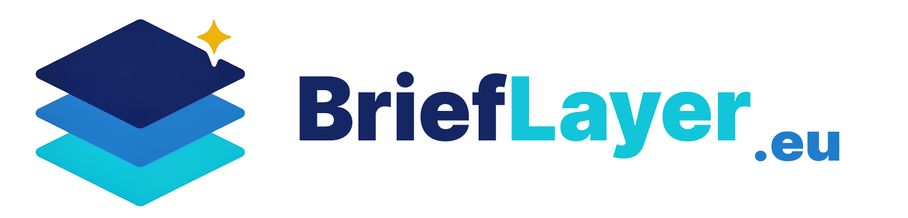

<!DOCTYPE html>
<html lang="fr">
<head>
<meta charset="UTF-8" />
<title>BriefLayer | Automatisez vos services de veille réglementaire</title>
<meta name="viewport" content="width=device-width, initial-scale=1" />
<meta name="description" content="BriefLayer automatise votre service de veille réglementaire : sources agrégées, tri IA, validation humaine et bulletins clients personnalisés." />
<meta name="robots" content="index, follow" />
<meta name="author" content="Jimmy Kolbe-André" />
<meta name="keywords" content="veille réglementaire automatisée, bulletin de veille, veille affaires publiques, automatisation veille, IA veille réglementaire, bulletins clients personnalisés" />
<meta name="theme-color" content="#fffdf8" />
<link rel="canonical" href="https://brieflayer.eu/" />
<link rel="icon" type="image/svg+xml" href="assets/favicon.svg" />
<meta property="og:type" content="website" />
<meta property="og:site_name" content="BriefLayer" />
<meta property="og:locale" content="fr_FR" />
<meta property="og:locale:alternate" content="en_GB" />
<meta property="og:url" content="https://brieflayer.eu/" />
<meta property="og:title" content="BriefLayer | Automatisez vos services de veille réglementaire" />
<meta property="og:description" content="Automatisez votre service de veille réglementaire : sources agrégées, tri IA, validation humaine et bulletins clients personnalisés." />
<meta property="og:image" content="https://brieflayer.eu/assets/social-preview.png" />
<meta property="og:image:secure_url" content="https://brieflayer.eu/assets/social-preview.png" />
<meta property="og:image:type" content="image/png" />
<meta property="og:image:width" content="1200" />
<meta property="og:image:height" content="630" />
<meta property="og:image:alt" content="BriefLayer.eu - Automatisez vos services de veille réglementaire" />
<meta name="twitter:card" content="summary_large_image" />
<meta name="twitter:title" content="BriefLayer | Automatisez vos services de veille réglementaire" />
<meta name="twitter:description" content="Automatisez votre service de veille réglementaire : sources agrégées, tri IA, validation humaine et bulletins clients personnalisés." />
<meta name="twitter:image" content="https://brieflayer.eu/assets/social-preview.png" />

<link rel="preconnect" href="https://fonts.googleapis.com" />
<link rel="preconnect" href="https://fonts.gstatic.com" crossorigin />
<link href="https://fonts.googleapis.com/css2?family=Archivo:wght@500..900&family=Newsreader:ital,wght@0,300..800;1,300..800&family=Inter:wght@300..800&family=JetBrains+Mono:wght@400..700&family=Source+Serif+Pro:wght@300..900&display=swap" rel="stylesheet" />

<style>
  html, body, #root { height: 100%; }
  body { margin: 0; background: #fffdf8; font-family: 'Inter', -apple-system, system-ui, sans-serif; overflow-x: hidden; }
  * { box-sizing: border-box; }
  img, svg { max-width: 100%; }
  details > summary { list-style: none; }
  details > summary::-webkit-details-marker { display: none; }

  @keyframes starPulse {
    0%   { opacity: 0; transform: scale(0.4) rotate(0deg); }
    30%  { opacity: 1; transform: scale(1.2) rotate(20deg); }
    60%  { opacity: 1; transform: scale(1.0) rotate(-10deg); }
    80%  { opacity: 0.7; transform: scale(1.1) rotate(15deg); }
    100% { opacity: 0; transform: scale(0.4) rotate(0deg); }
  }
  @keyframes floatIn {
    from { opacity: 0; transform: translateY(-12px); }
    to   { opacity: 1; transform: translateY(0); }
  }
  @keyframes sectionReveal {
    from { opacity: 0; transform: translateY(24px) scale(0.985); filter: blur(8px); }
    to   { opacity: 1; transform: translateY(0) scale(1); filter: blur(0); }
  }
  .ai-star {
    display: inline-block;
    margin-left: 4px;
    font-size: 0.55em;
    vertical-align: super;
    animation: starPulse 2.8s ease-in-out infinite;
    animation-delay: 0.6s;
  }
  .site-header {
    backdrop-filter: blur(14px);
    -webkit-backdrop-filter: blur(14px);
    transition: padding .24s ease, background-color .24s ease, border-color .24s ease, box-shadow .24s ease, border-radius .24s ease;
  }
  .site-header img {
    transition: width .24s ease, max-width .24s ease;
  }
  .section-reveal {
    opacity: 0;
    transform-origin: center top;
    animation: sectionReveal 0.74s cubic-bezier(.16, 1, .3, 1) forwards;
    will-change: opacity, transform, filter;
  }
  @media (prefers-reduced-motion: reduce) {
    .ai-star,
    .site-header,
    .site-header img,
    .section-reveal {
      transition: none !important;
      animation: none !important;
      opacity: 1 !important;
      transform: none !important;
      filter: none !important;
    }
  }
</style>
</head>
<body>
<div id="root"></div>

<script src="https://unpkg.com/react@18.3.1/umd/react.development.js" crossorigin="anonymous"></script>
<script src="https://unpkg.com/react-dom@18.3.1/umd/react-dom.development.js" crossorigin="anonymous"></script>
<script src="https://unpkg.com/@babel/standalone@7.29.0/babel.min.js" crossorigin="anonymous"></script>

<!-- ──────────────────────────────────────────────────────────────────────── -->
<!-- Bilingual content                                                         -->
<!-- ──────────────────────────────────────────────────────────────────────── -->
<script type="text/babel">
const CALENDLY_URL = 'https://calendly.com/kolbejimmy/30min';
const C = {
  hero: {
    eyebrow:  { fr: '', en: '' },
    title:    { fr: 'BriefLayer automatise votre service de veille : un bulletin personnalisé pour chaque client.',
                en: 'BriefLayer automates your monitoring service: a personalised briefing for every client.' },
    sub:      { fr: 'Vous travaillez en affaires publiques ou en cabinet d’avocats ? Vos bulletins de veille vous prennent encore 1 à 2 h par jour ? BriefLayer automatise leur production pour livrer à chaque client une veille personnalisée en quelques minutes.',
                en: 'Are you a public affairs professional or a lawyer? Are your monitoring briefings still taking 1 to 2 hours a day? BriefLayer automates production to deliver each client a personalized briefing in minutes.' },
    cta:      { fr: 'Réserver un appel', en: 'Book a call' },
    sec:      { fr: 'Voir la méthode →', en: 'See the method →' },
    trust:    [
      { fr: 'Droit public — Paris-Panthéon-Assas', en: 'Université Paris-Panthéon-Assas' },
      { fr: 'Formation IA — Paris-Panthéon-Assas (2026)', en: 'AI training — Université Paris-Panthéon-Assas (2026)' },
      { fr: 'Pappers — plateformes de veille', en: 'Pappers — monitoring platforms' },
    ],
  },
  whoFor: {
    line:    { fr: "D'après FiscalNote, 59 % des professionnels en affaires publiques passent jusqu'à 10 h par semaine à traiter la veille réglementaire et l'actualité. BriefLayer automatise vos services de veille pour que ce temps serve enfin la stratégie et le suivi client.",
               en: 'According to FiscalNote, 59% of public affairs professionals spend up to 10 hours a week processing regulatory monitoring and news. BriefLayer automates monitoring services so you can spend that time on strategy and client relationships.' },
    source:  { fr: "Source : FiscalNote, The 2025 State of Government Affairs",
               en: 'Source: FiscalNote, The 2025 State of Government Affairs' },
    url: 'https://fiscalnote-marketing.s3.amazonaws.com/State-of-Government-Affairs_2025.pdf',
  },
  pain: {
    title:   { fr: "Votre service de veille est encore artisanal",
               en: 'Your monitoring service is still too manual' },
    intro:   { fr: "Votre service de veille repose encore sur trop d'opérations manuelles. Les mêmes irritants reviennent souvent.",
               en: 'Your monitoring service still relies on too many manual operations. The same issues keep coming back.' },
    symptoms: [
      { title: { fr: 'Alertes peu pertinentes', en: 'Low-signal alerts' },
        body:  { fr: 'Trop de bruit, pas assez de signal exploitable.', en: 'Too much noise, not enough usable signal.' } },
      { title: { fr: 'Solutions de veille hors de prix', en: 'Overpriced monitoring tools' },
        body:  { fr: 'Des abonnements coûteux, souvent mal exploités.', en: 'Expensive subscriptions, rarely used to their full potential.' } },
      { title: { fr: 'Tableurs désordonnés', en: 'Disorganised spreadsheets' },
        body:  { fr: 'Des versions multiples, rarement à jour au même moment.', en: 'Several versions, never quite up to date at the same time.' } },
      { title: { fr: 'Dépendance aux stagiaires', en: 'Reliance on interns' },
        body:  { fr: 'La continuité repose sur des personnes de passage.', en: 'Continuity depends on people who will soon move on.' } },
      { title: { fr: 'Flux de veille trop complexes', en: 'Overly complex monitoring flows' },
        body:  { fr: 'Des étapes dispersées que personne ne pilote vraiment.', en: 'Scattered steps that no one really owns.' } },
      { title: { fr: 'Bulletins non personnalisés', en: 'Generic client briefings' },
        body:  { fr: 'Le même contenu part à tous les clients, sans nuance.', en: 'The same content goes to every client, with little nuance.' } },
    ],
    flip:    { fr: '',
               en: '' },
  },
  doing: {
    title: { fr: "Ajoutez une couche d'automatisation à votre système",
             en: 'Add an automation layer to your system' },
    body:  { fr: 'Nous organisons et automatisons les flux et traitements que vous utilisez déjà.',
             en: 'We organise and automate the feeds and processing steps you already rely on.' },
    cards: [
      { icon: 'key', title: { fr: 'Simplicité', en: 'Simplicity' },
        body: { fr: 'Nous concevons des processus que votre équipe voit, comprend et utilise',
                en: 'We design processes your team can see, understand and actually use' } },
      { icon: 'eye', title: { fr: 'Vérification humaine', en: 'Human review' },
        body: { fr: 'Le processus reste soumis à des étapes de validation humaine',
                en: 'The process remains subject to human validation at the right steps' } },
      { icon: 'braces', title: { fr: 'Sur-mesure', en: 'Tailored' },
        body: { fr: 'Le système s’adapte à vos clients, à vos sources et à vos formats',
                en: "The system is fully customisable around each client's needs" } },
    ],
  },
  method: {
    title:   { fr: "", en: '' },
    intro:   { fr: '',
               en: '' },
    steps: [
      { name: { fr: 'Audit', en: 'Audit' },
        body: { fr: "Nous passons en revue vos sources, vos abonnements, vos outils et vos usages réels. Nous repérons les doublons, les angles morts et les coûts inutiles, pour partir sur des bases claires avant d'automatiser.",
                en: 'We review your sources, subscriptions, tools and actual usage. We quantify costs, identify duplicates and map blind spots, so automation starts from a clear baseline.' },
        del:  { fr: "Cartographie des sources, audit des coûts, recommandations d’optimisation.", en: 'Source map, cost audit, optimisation recommendations.' } },
      { name: { fr: 'Conception', en: 'Design' },
        body: { fr: "Nous définissons les règles de tri et de priorité pour ne garder, pour chaque client, que l'information utile. Nous fixons aussi les moments où une validation humaine reste indispensable.",
                en: 'We define sorting, qualification and prioritisation rules so each client only receives useful information. We also identify the points where human validation remains essential.' },
        del:  { fr: "Architecture de traitement validée, chiffrage d’exploitation, interface de validation configurée.", en: 'Validated processing architecture, operating-cost estimate, configured validation interface.' } },
      { name: { fr: 'Mise en place', en: 'Implementation' },
        body: { fr: "Nous installons le dispositif défini ensemble, sur votre infrastructure ou sur la nôtre. Nous branchons les sources, paramétrons les règles, ajoutons les validations nécessaires et connectons les bons canaux de diffusion.",
                en: 'We implement the system designed in the previous step, on your infrastructure or ours. We connect the sources, configure the rules and human review points, and plug in the right output channels for your team.' },
        del:  { fr: 'Un dispositif opérationnel, des flux branchés, un suivi dans le temps défini avec vous.', en: 'An operational system, connected feeds and an ongoing follow-up plan defined with you.' } },
    ],
  },
  cases: {
    title:   { fr: 'Ce que ça change concrètement.', en: 'What it changes, in practice.' },
    items: [
      { tag:  { fr: 'Fédération professionnelle', en: 'Trade association' },
        head: { fr: 'Sept heures par semaine récupérées.', en: 'Seven hours a week, back on the desk.' },
        body: { fr: "Fédération sectorielle de 200 adhérents. Une chargée de mission bricolait la veille hebdomadaire deux jours par semaine. Nous avons mis en place un système automatisé couvrant quatorze sources institutionnelles. Le bulletin du lundi part désormais tout seul et les heures gagnées repartent dans le suivi parlementaire.",
                en: 'A sectoral trade association (200 members). Weekly monitoring patched together by a policy officer, two days a week. We set up an automated system covering fourteen institutional sources. The Monday briefing is now automatic. The policy officer redeploys those hours into parliamentary tracking.' } },
      { tag:  { fr: "Cabinet d'affaires publiques", en: 'Public affairs consultancy' },
        head: { fr: 'Huit revues clients, chaque matin.', en: 'Eight client briefings, every morning.' },
        body: { fr: "Cabinet de conseil en affaires publiques, huit consultants. Le système produit chaque matin huit revues thématiques à partir d'un même flux de captation. Elles partent par e-mail nominatif et chaque consultant commence sa journée avec un brief client déjà à jour.",
                en: 'A public affairs consultancy (8 consultants). We set up a system that produces eight thematic reviews each morning from a single capture flow. Distribution via individual emails. Every consultant starts the day with an up-to-date client brief.' } },
    ],
  },
  offers: {
    title:   { fr: 'Trois façons de travailler ensemble.', en: 'Three ways to work together.' },
    items: [
      { name:  { fr: 'AUDIT VEILLE', en: 'MONITORING AUDIT' },
        hook:  { fr: "Cartographier avant d'investir.", en: 'Map before you invest.' },
        who:   { fr: "vous voulez comprendre où votre dispositif actuel perd du temps ou de l'argent avant d'investir.",
                 en: 'you want to know where your current setup is leaking, before committing resources.' },
        del:   { fr: 'cartographie des sources, angles morts identifiés, recommandations chiffrées, débrief en visio.',
                 en: 'source mapping, blind spots identified, costed recommendations, video debrief.' },
        dur:   { fr: 'une semaine.', en: 'one week.' },
        price: { fr: 'à partir de 1 800 € HT', en: 'from €1,800 (excl. VAT)' },
        flag:  null },
      { name:  { fr: 'SETUP BRIEFLAYER', en: 'BRIEFLAYER SETUP' },
        hook:  { fr: 'Le système clé en main.', en: 'The turnkey system.' },
        who:   { fr: "vous voulez un système qui fonctionne sans dépendre d'un stagiaire ni d'un SaaS trop rigide.",
                 en: 'you want a system that runs, without depending on an intern or a rigid SaaS.' },
        del:   { fr: "processus complet, sources branchées, bulletin automatique, documentation, formation de l'équipe, un mois d'ajustements inclus.",
                 en: 'complete process, sources connected, automated briefing, documentation, team training and one month of adjustments included.' },
        dur:   { fr: 'deux à trois semaines.', en: 'two to three weeks.' },
        price: { fr: 'à partir de 6 500 € HT', en: 'from €6,500 (excl. VAT)' },
        flag:  { fr: 'Le plus demandé', en: 'Most popular' } },
      { name:  { fr: 'BULLETIN SUR-MESURE', en: 'MANAGED BRIEFING' },
        hook:  { fr: 'Le bulletin sans la tuyauterie.', en: 'The output without the overhead.' },
        who:   { fr: "vous voulez recevoir le bulletin sans gérer le système au quotidien. Je m'occupe de l'exploitation.",
                 en: 'you want the output without managing the system. I handle everything, you receive the briefing.' },
        del:   { fr: 'bulletin à votre fréquence, hébergement du système, mises à jour des sources, support.',
                 en: 'briefing at your cadence, system hosting, source updates, support.' },
        dur:   { fr: 'abonnement mensuel, sans engagement au-delà de trois mois.',
                 en: 'monthly subscription, no commitment beyond three months.' },
        price: { fr: 'à partir de 1 200 € HT / mois', en: 'from €1,200 / month (excl. VAT)' },
        flag:  null },
    ],
  },
  whyMe: {
    title: { fr: "Enseignant-chercheur en droit du lobbying et spécialiste de l'IA", en: 'Lecturer and researcher in lobbying law, specialising in AI' },
    p1:    { fr: "",
             en: '' },
    p2:    { fr: "",
             en: '' },
    p3:    { fr: "",
             en: '' },
    p4:    { fr: "",
             en: '' },
    mentions: { fr: 'Paris-Panthéon-Assas · CERSA · Pappers · ICP · International Budget Partnership · University of Oxford',
                en: 'Paris-Panthéon-Assas · CERSA · Pappers · ICP · International Budget Partnership · University of Oxford' },
    proof: [
      { k: { fr: 'Droit du lobbying', en: 'Lobbying law' },
        v: { fr: 'Doctorat en droit public consacré à l’encadrement du lobbying en France.', en: 'Doctorate in public law on the regulation of lobbying in France.' } },
      { k: { fr: 'Affaires publiques', en: 'Public affairs' },
        v: { fr: 'Enseigne dans le master affaires publiques de l’Institut catholique de Paris.', en: 'Teaching in the public affairs master’s programme at the Institut Catholique de Paris.' } },
      { k: { fr: 'Pappers', en: 'Pappers' },
        v: { fr: 'Ancien Chief Product Officer, responsable de plateformes de veille utilisées par des juristes et des professionnels des affaires publiques.', en: 'Former CPO, responsible for monitoring platforms used by legal and public affairs professionals.' } },
      { k: { fr: 'IA appliquée', en: 'Applied AI' },
        v: { fr: 'Formation doctorale à l’intelligence artificielle donnée à Paris Panthéon Assas en 2026.', en: 'Doctoral training on artificial intelligence delivered at Paris Panthéon Assas in 2026.' } },
    ],
    cvLink:   { fr: '', en: '' },
    name:     'Jimmy Kolbe-André',
  },
  faq: {
    items: [
      { q: { fr: "En quoi est-ce différent d'une solution de veille classique ?", en: 'How is this different from a standard monitoring solution?' },
        a: { fr: "Une solution de veille fait remonter l'information. BriefLayer part de vos flux existants et prépare des bulletins clients déjà filtrés, hiérarchisés et mis en forme. Vous gardez la main sur la validation, le système absorbe le travail répétitif.",
             en: 'A monitoring solution surfaces information. BriefLayer turns your existing feeds into client briefings ready for review, with the right filters, level of detail and formatting. You keep validation, the system handles the repetitive work.' } },
      { q: { fr: "Est-ce que je pourrais l'automatiser moi-même avec ChatGPT ?", en: 'Could I automate this myself with ChatGPT?' },
        a: { fr: "Oui, pour un premier prototype. Le vrai sujet dépasse vite le prompt. Il faut brancher les sources, fiabiliser le tri, gérer les formats clients, suivre les sorties et prévoir les validations. BriefLayer vous évite de construire cette chaîne en parallèle de votre activité principale.",
             en: 'Yes, for a first prototype. The issue is rarely the prompt alone. You need connected sources, reliable triage rules, client formats, output tracking and validation steps. BriefLayer saves you from building all of that alongside your core work.' } },
      { q: { fr: 'Quelle garantie ai-je sur la qualité des bulletins ?', en: 'How do you guarantee briefing quality?' },
        a: { fr: "La qualité se joue avant l'automatisation. Nous partons de vos meilleurs bulletins, de vos critères éditoriaux et des attentes de chaque client. Les premiers livrables sont relus avec vous, puis le système est ajusté jusqu'à produire un bulletin que vous pouvez envoyer sans tout reprendre.",
             en: 'Quality is built before automation. We start from your best briefings, editorial criteria and each client’s expectations. The first outputs are reviewed with you, then the system is adjusted until it produces work you can send without rewriting everything.' } },
      { q: { fr: 'Est-ce que je vais devoir payer un abonnement ?', en: 'Will I have to pay a subscription?' },
        a: { fr: "Le système sur mesure se paie une fois. Si vous voulez que j'en assure ensuite l'exploitation, la maintenance et les ajustements, cela devient un service mensuel séparé. Vous choisissez le niveau d'accompagnement qui vous convient.",
             en: 'The custom system is paid for once. If you want us to operate, maintain and adjust it over time, that becomes a separate monthly service. You choose the level of dependency that suits you.' } },
      { q: { fr: "Je n'aurai plus besoin d'être abonné à des services de veille ?", en: 'Will I still need subscriptions to monitoring services?' },
        a: { fr: "BriefLayer ne vend pas de données. Nous utilisons vos sources, vos abonnements et vos flux, puis nous regardons ce qui sert vraiment. L'audit permet aussi de repérer les doublons, les angles morts et les coûts mal justifiés.",
             en: 'BriefLayer does not sell data. We use your sources, subscriptions and feeds, then identify which ones are actually useful. The audit also helps spot duplicates, blind spots and costs that do not create enough value.' } },
      { q: { fr: 'Mes données et celles de mes clients restent-elles confidentielles ?', en: "Will my data and my clients' data remain confidential?" },
        a: { fr: "Oui. Le processus peut tourner sur votre infrastructure ou sur un hébergement français dédié, avec un engagement de confidentialité. Les accès, les sources et les livrables clients sont cadrés dès l'audit pour limiter les circulations inutiles.",
             en: 'Yes. The process can run on your infrastructure or dedicated French hosting, with a confidentiality commitment. Access, sources and client deliverables are scoped during the audit to avoid unnecessary data flows.' } },
      { q: { fr: 'À quel point les bulletins de veille envoyés aux clients pourront-ils être personnalisés ?', en: 'How personalised can the client briefings be?' },
        a: { fr: "Chaque client peut avoir son périmètre, ses sources prioritaires, son niveau de synthèse et son format. L'objectif n'est pas d'envoyer le même bulletin à tout le monde, mais de produire plus vite des livrables réellement adaptés.",
             en: 'Each client can have their own scope, priority sources, level of synthesis and format. The point is not to send the same briefing to everyone, but to produce tailored deliverables faster.' } },
      { q: { fr: 'En combien de temps mon processus pourra-t-il être automatisé ?', en: 'How quickly can my process be automated?' },
        a: { fr: "L'audit prend généralement une semaine. La conception demande ensuite deux à trois semaines selon le nombre de sources, de formats et de clients. La mise en production se fait par étapes, pour ne pas perturber votre service de veille pendant la transition.",
             en: 'The audit usually takes one week. Design then takes two to three weeks depending on the number of sources, formats and clients. Deployment happens in stages, so your monitoring service is not disrupted during the transition.' } },
      { q: { fr: 'À qui appartient le processus une fois la prestation terminée ?', en: 'Who owns the process once the engagement is over?' },
        a: { fr: "À vous. La documentation, les configurations et les prompts sont livrés. Vous pouvez reprendre la main en interne ou me laisser l'exploiter si vous préférez garder une équipe légère.",
             en: 'You do. Documentation, configurations and prompts are handed over. You can take it in-house, or let me keep operating it if you prefer to keep your team light.' } },
      { q: { fr: 'Quelles informations devrais-je vous communiquer pour un audit ?', en: 'What information do you need for an audit?' },
        a: { fr: "Vos sources, vos abonnements, quelques bulletins récents, vos formats clients et la manière dont vous validez aujourd'hui les contenus. Plus le point de départ est clair, plus l'automatisation colle à votre façon de travailler.",
             en: 'Your sources, subscriptions, a few recent briefings, client formats and the way you currently validate content. The clearer the starting point, the closer the automation fits how you work.' } },
      { q: { fr: 'Quels types de veille traitez-vous ?', en: 'What kinds of monitoring can you handle?' },
        a: { fr: "Veille réglementaire, institutionnelle, parlementaire, médiatique ou réputationnelle. La méthode reste la même. On part de vos sources, on formalise ce qui compte, puis on automatise la production du livrable.",
             en: 'Regulatory, institutional, parliamentary, media or reputational monitoring. The method stays the same. We start from your sources, formalise what matters, then automate deliverable production.' } },
      { q: { fr: 'Travaillez-vous à Paris, Bruxelles, ailleurs ?', en: 'Do you work in Paris, Brussels or elsewhere?' },
        a: { fr: "À distance pour l'essentiel. Des rendez-vous en présentiel sont possibles à Paris ou Bruxelles quand cela aide à cadrer le besoin. Pour le reste, tout peut se faire en visio.",
             en: 'Mostly remotely. In-person meetings are possible in Paris or Brussels when they help scope the need. Otherwise, everything can be done by video call.' } },
    ],
  },
  finalCta: {
    title: { fr: "Faites le point sur votre service de veille en 30 minutes",
             en: 'Review your monitoring service in 30 minutes' },
    sub:   { fr: "Vous me présentez votre dispositif actuel. Vous repartez avec un premier plan d'action pour l'automatiser. C'est gratuit.",
             en: "Walk me through your current monitoring setup. You leave with a first action plan for automating it. It's free." },
    btn:   { fr: 'Réserver un appel', en: 'Book a call' },
    alt:   { fr: '',
             en: '' },
  },
  footer: {
    tag:   { fr: '',
             en: 'Regulatory monitoring and automation for public affairs' },
    legal: { fr: 'Mentions légales · Politique de confidentialité',
             en: 'Legal notice · Privacy policy' },
  },
};
window.C = C;
window.CALENDLY_URL = CALENDLY_URL;
</script>

<!-- ──────────────────────────────────────────────────────────────────────── -->
<!-- Shared primitives                                                         -->
<!-- ──────────────────────────────────────────────────────────────────────── -->
<script type="text/babel">
function WfPortrait({ w = 160, h = 200, dark = false, ring = 0, style, label = 'JK' }) {
  const stroke = dark ? 'rgba(255,255,255,.7)' : 'rgba(0,0,0,.75)';
  const bg = dark ? '#181715' : '#f1ede4';
  return (
    <div style={{ position: 'relative', width: w, height: h, ...style }}>
      <svg viewBox="0 0 160 200" width="100%" height="100%" style={{ display: 'block' }}>
        <rect x="1" y="1" width="158" height="198" rx={ring} fill={bg} stroke={stroke} strokeWidth="1.5" strokeDasharray="4 3" />
        <g fill="none" stroke={stroke} strokeWidth="1.4" strokeLinecap="round" strokeLinejoin="round">
          <circle cx="80" cy="86" r="32" />
          <path d="M30 198 C 36 158, 60 138, 80 138 C 100 138, 124 158, 130 198" />
          <path d="M55 70 q 8 -22 26 -22 q 22 0 30 22" />
          <path d="M64 88 h 12 M84 88 h 12" />
          <path d="M72 102 q 8 6 16 0" />
        </g>
        <text x="80" y="20" textAnchor="middle" fontFamily="ui-monospace, Menlo, monospace" fontSize="9" fill={stroke} letterSpacing="1">{label}</text>
      </svg>
    </div>
  );
}

function WfLogo({ label, dark = false, w, style }) {
  const c = dark ? 'rgba(255,255,255,.55)' : 'rgba(0,0,0,.55)';
  return (
    <span style={{
      display: 'inline-flex', alignItems: 'center', gap: 6,
      padding: '4px 10px', border: `1px dashed ${c}`, borderRadius: 999,
      font: '500 10px/1 ui-monospace, Menlo, monospace',
      textTransform: 'uppercase', letterSpacing: '.06em', color: c,
      width: w, justifyContent: 'center', whiteSpace: 'nowrap', ...style,
    }}>
      <span style={{ width: 6, height: 6, background: c, borderRadius: 1 }}></span>
      {label}
    </span>
  );
}

function WfLangToggle({ lang, setLang, dark = false, accent, compact = false }) {
  const off = dark ? 'rgba(255,255,255,.55)' : 'rgba(23,34,92,.58)';
  const langs = [
    {
      code: 'fr',
      label: 'Français',
      flagBg: 'linear-gradient(90deg, #1b3f8b 0%, #1b3f8b 33%, #fff 33%, #fff 66%, #e63946 66%, #e63946 100%)',
    },
    {
      code: 'en',
      label: 'English',
      flagBg: `
        linear-gradient(90deg, transparent 0%, transparent 40%, #fff 40%, #fff 45%, #c8102e 45%, #c8102e 55%, #fff 55%, #fff 60%, transparent 60%, transparent 100%),
        linear-gradient(0deg, transparent 0%, transparent 36%, #fff 36%, #fff 43%, #c8102e 43%, #c8102e 57%, #fff 57%, #fff 64%, transparent 64%, transparent 100%),
        linear-gradient(32deg, transparent 0%, transparent 43%, #fff 43%, #fff 47%, #c8102e 47%, #c8102e 53%, #fff 53%, #fff 57%, transparent 57%, transparent 100%),
        linear-gradient(148deg, transparent 0%, transparent 43%, #fff 43%, #fff 47%, #c8102e 47%, #c8102e 53%, #fff 53%, #fff 57%, transparent 57%, transparent 100%),
        linear-gradient(#012169, #012169)`,
    },
  ];
  return (
    <div style={{
      display: 'inline-flex', alignItems: 'center',
      border: `1px solid ${dark ? 'rgba(255,255,255,.2)' : 'rgba(18,97,166,.24)'}`,
      background: dark ? 'rgba(255,255,255,.06)' : 'rgba(255,255,255,.62)',
      borderRadius: 999, padding: 3,
      boxShadow: dark ? 'none' : '0 8px 24px rgba(18,97,166,.08)',
      font: '900 11px/1 ui-monospace, Menlo, monospace', letterSpacing: '.06em',
    }}>
      {langs.map(l => (
        <button
          key={l.code}
          type="button"
          aria-label={l.label}
          aria-pressed={lang === l.code}
          onClick={() => setLang(l.code)}
          style={{
            minWidth: compact ? 42 : 50,
            padding: compact ? '7px 9px' : '7px 11px',
            borderRadius: 999,
            border: lang === l.code ? `1px solid ${accent || '#1261a6'}` : '1px solid rgba(255,255,255,.7)',
            cursor: 'pointer',
            backgroundImage: `${lang === l.code ? 'linear-gradient(rgba(255,255,255,.08), rgba(255,255,255,.08))' : 'linear-gradient(rgba(255,255,255,.55), rgba(255,255,255,.55))'}, ${l.flagBg}`,
            backgroundSize: 'cover',
            backgroundPosition: 'center',
            color: lang === l.code ? '#071b54' : off,
            boxShadow: lang === l.code ? 'inset 0 0 0 1px rgba(255,255,255,.7), 0 7px 16px rgba(18,97,166,.18)' : 'inset 0 0 0 1px rgba(255,255,255,.45)',
            font: 'inherit',
            textTransform: 'uppercase',
            display: 'inline-flex',
            alignItems: 'center',
            justifyContent: 'center',
            lineHeight: 1,
            textShadow: '0 1px 6px rgba(255,255,255,.95), 0 0 2px rgba(255,255,255,.9)',
          }}
        >
          {l.code}
        </button>
      ))}
    </div>
  );
}

Object.assign(window, { WfPortrait, WfLogo, WfLangToggle });
</script>

<!-- ──────────────────────────────────────────────────────────────────────── -->
<!-- Method pipeline animations                                                -->
<!-- ──────────────────────────────────────────────────────────────────────── -->
<script type="text/babel">
function MethodAnim({ stage, tokens, fonts, lang }) {
  if (stage === 0) return <AnimScope tokens={tokens} fonts={fonts} lang={lang} />;
  if (stage === 1) return <AnimBuild tokens={tokens} fonts={fonts} lang={lang} />;
  return <AnimScale tokens={tokens} fonts={fonts} lang={lang} />;
}

function AnimScope({ tokens, fonts, lang }) {
  const { accent, accent2, border, ink2, muted } = tokens;
  const { mono } = fonts;
  const sources = [
    { id: 0, label: 'JO',     y: 28,  bin: 0, delay: 0.0 },
    { id: 1, label: 'AN',     y: 64,  bin: 1, delay: 0.6 },
    { id: 2, label: 'Sénat',  y: 100, bin: 0, delay: 1.2 },
    { id: 3, label: 'AMF',    y: 136, bin: 2, delay: 1.8 },
    { id: 4, label: 'COMM.',  y: 172, bin: 1, delay: 2.4 },
    { id: 5, label: 'CNIL',   y: 28,  bin: 0, delay: 3.0 },
    { id: 6, label: 'ARCEP',  y: 100, bin: 2, delay: 3.6 },
    { id: 7, label: 'Presse', y: 172, bin: 1, delay: 4.2 },
  ];
  const filterX = 290, filterY = 100, binX = 470, binY = [40, 100, 160];
  const uid = React.useId().replace(/:/g, '');
  return (
    <div style={{ position: 'relative' }}>
      <Caption tokens={tokens} fonts={fonts}>
        {lang === 'fr' ? '◯ Captation, filtrage et tri des sources institutionnelles' : '◯ Capture, filter and sort institutional sources'}
      </Caption>
      <svg viewBox="0 0 600 220" width="100%" height="200" style={{ display: 'block' }} aria-hidden="true">
        <style>{`
          @keyframes scope-${uid} {
            0%   { transform: translate(var(--sx), var(--sy)); opacity: 0; }
            6%   { transform: translate(var(--sx), var(--sy)); opacity: 1; }
            32%  { transform: translate(${filterX}px, ${filterY}px); opacity: 1; }
            36%  { transform: translate(${filterX}px, ${filterY}px); opacity: 0.4; }
            44%  { transform: translate(${filterX + 40}px, ${filterY}px); opacity: 1; }
            70%  { transform: translate(var(--ex), var(--ey)); opacity: 1; }
            96%  { transform: translate(var(--ex), var(--ey)); opacity: 1; }
            100% { transform: translate(var(--ex), var(--ey)); opacity: 0; }
          }
          .scope-dot-${uid} { animation: scope-${uid} 6s linear infinite; transform-box: fill-box; }
          @keyframes filter-pulse-${uid} { 0%,100% { opacity: .35; transform: scale(1); } 50% { opacity: .8; transform: scale(1.08); } }
          .filter-pulse-${uid} { animation: filter-pulse-${uid} 1.8s ease-in-out infinite; transform-origin: center; transform-box: fill-box; }
          @keyframes bin-fill-${uid} { 0%,100% { opacity: .25; } 50% { opacity: .9; } }
          .bin-fill-${uid} { animation: bin-fill-${uid} 2.2s ease-in-out infinite; }
        `}</style>
        <line x1="20" y1="14" x2="20" y2="206" stroke={border} strokeWidth="1" strokeDasharray="2 4" />
        <text x="22" y="10" fill={muted} style={{ font: `600 9px ${mono}`, letterSpacing: '.12em' }}>SOURCES</text>
        <g className={`filter-pulse-${uid}`}>
          <polygon points={`${filterX - 30},${filterY - 36} ${filterX + 30},${filterY - 36} ${filterX + 10},${filterY + 36} ${filterX - 10},${filterY + 36}`}
            fill={`${accent}11`} stroke={accent} strokeWidth="1" />
        </g>
        <text x={filterX} y={filterY - 44} textAnchor="middle" fill={accent} style={{ font: `700 9px ${mono}`, letterSpacing: '.16em' }}>FILTRE&nbsp;IA</text>
        <text x={filterX} y={filterY + 54} textAnchor="middle" fill={muted} style={{ font: `400 8px ${mono}` }}>prompt + règles</text>
        <line x1="580" y1="14" x2="580" y2="206" stroke={border} strokeWidth="1" strokeDasharray="2 4" />
        <text x="556" y="10" textAnchor="end" fill={muted} style={{ font: `600 9px ${mono}`, letterSpacing: '.12em' }}>BULLETIN</text>
        {binY.map((y, i) => (
          <g key={i}>
            <rect x={binX - 6} y={y - 16} width={64} height={32} rx={6} fill={`${accent}08`} stroke={`${accent}55`} strokeWidth="1" />
            <text x={binX + 26} y={y + 4} textAnchor="middle" fill={accent} style={{ font: `600 9px ${mono}`, letterSpacing: '.1em' }}>
              {['PRIO.', 'STD.', 'ARCH.'][i]}
            </text>
            <circle className={`bin-fill-${uid}`} cx={binX + 26} cy={y + 22} r="2" fill={accent} style={{ animationDelay: `${i * 0.4}s` }} />
          </g>
        ))}
        {sources.slice(0, 5).map((s) => (
          <g key={`src-${s.id}`}>
            <circle cx={26} cy={s.y} r="3" fill={accent2} />
            <text x={36} y={s.y + 3} fill={ink2} style={{ font: `500 9px ${mono}` }}>{s.label}</text>
          </g>
        ))}
        {sources.map((s) => (
          <circle key={s.id} className={`scope-dot-${uid}`} r="3.5" fill={accent2}
            style={{ '--sx': '26px', '--sy': `${s.y}px`, '--ex': `${binX + 26}px`, '--ey': `${binY[s.bin]}px`, animationDelay: `${s.delay}s` }} />
        ))}
      </svg>
    </div>
  );
}

function AnimBuild({ tokens, fonts, lang }) {
  const { accent, accent2, surface2, border, muted } = tokens;
  const { mono } = fonts;
  const uid = React.useId().replace(/:/g, '');
  const nodes = [
    { x: 50,  label: lang === 'fr' ? 'Captation' : 'Capture',  sub: 'RSS · API', delay: 0.0 },
    { x: 200, label: lang === 'fr' ? 'Filtre IA' : 'AI filter', sub: lang === 'fr' ? 'prompt + règles' : 'prompt + rules', delay: 1.2 },
    { x: 350, label: lang === 'fr' ? 'Résumé' : 'Summary',     sub: lang === 'fr' ? 'gen. structuré' : 'structured gen.', delay: 2.4 },
    { x: 500, label: lang === 'fr' ? 'Bulletin' : 'Briefing',  sub: 'Slack · mail', delay: 3.6 },
  ];
  return (
    <div style={{ position: 'relative' }}>
      <Caption tokens={tokens} fonts={fonts}>
        {lang === 'fr' ? '⚙ Construction du processus, étape par étape' : '⚙ Building the process, step by step'}
      </Caption>
      <svg viewBox="0 0 600 200" width="100%" height="200" style={{ display: 'block' }} aria-hidden="true">
        <style>{`
          @keyframes build-node-${uid} { 0%,100% { opacity: 0; transform: translateY(6px) scale(.92); } 12%,95% { opacity: 1; transform: translateY(0) scale(1); } }
          .b-node-${uid} { animation: build-node-${uid} 5s ease-out infinite; transform-origin: center; transform-box: fill-box; }
          @keyframes build-arrow-${uid} { 0%,100% { stroke-dashoffset: 100; opacity: 0; } 18%,95% { stroke-dashoffset: 0; opacity: 1; } }
          .b-arrow-${uid} { animation: build-arrow-${uid} 5s ease-out infinite; stroke-dasharray: 100; }
          @keyframes build-pulse-${uid} { 0%,75% { opacity: 0; } 85% { opacity: 1; } 100% { opacity: 0; } }
          .b-pulse-${uid} { animation: build-pulse-${uid} 5s ease-in-out infinite; }
        `}</style>
        <defs>
          <marker id={`b-arr-${uid}`} viewBox="0 0 10 10" refX="9" refY="5" markerWidth="6" markerHeight="6" orient="auto">
            <path d="M0,0 L10,5 L0,10 z" fill={accent} />
          </marker>
          <filter id={`b-glow-${uid}`} x="-50%" y="-50%" width="200%" height="200%">
            <feGaussianBlur stdDeviation="3" result="b" />
            <feMerge><feMergeNode in="b" /><feMergeNode in="SourceGraphic" /></feMerge>
          </filter>
        </defs>
        <rect className={`b-pulse-${uid}`} x="40" y="60" width="540" height="80" rx="12" fill="none" stroke={accent} strokeWidth="1" opacity="0" filter={`url(#b-glow-${uid})`} />
        {[0, 1, 2].map((i) => {
          const x1 = nodes[i].x + 90, x2 = nodes[i + 1].x + 4;
          return (
            <line key={`arr-${i}`} className={`b-arrow-${uid}`} x1={x1} y1={100} x2={x2} y2={100}
              stroke={accent} strokeWidth="1.4" markerEnd={`url(#b-arr-${uid})`} style={{ animationDelay: `${nodes[i + 1].delay - 0.4}s` }} />
          );
        })}
        {nodes.map((n, i) => (
          <g key={i} className={`b-node-${uid}`} style={{ animationDelay: `${n.delay}s` }}>
            <rect x={n.x} y={76} width={94} height={48} rx={8} fill={surface2} stroke={accent} strokeWidth="1" />
            <text x={n.x + 47} y={93} textAnchor="middle" fill={accent} style={{ font: `700 9px ${mono}`, letterSpacing: '.1em' }}>
              {String(i + 1).padStart(2, '0')} · {n.label.toUpperCase()}
            </text>
            <text x={n.x + 47} y={107} textAnchor="middle" fill={muted} style={{ font: `400 9px ${mono}` }}>{n.sub}</text>
            <circle cx={n.x + 8} cy={84} r="3" fill={accent2} />
          </g>
        ))}
        <text x="300" y="160" textAnchor="middle" fill={muted} style={{ font: `500 9px ${mono}`, letterSpacing: '.18em' }}>PIPELINE</text>
        <line x1="40" y1="170" x2="560" y2="170" stroke={border} strokeWidth="1" strokeDasharray="2 4" />
      </svg>
    </div>
  );
}

function AnimScale({ tokens, fonts, lang }) {
  const { accent, accent2, surface, surface2, muted, ink2 } = tokens;
  const { mono } = fonts;
  const uid = React.useId().replace(/:/g, '');
  const cx = 300, cy = 100, R = 165;
  const consumers = [
    { angle: -150, label: lang === 'fr' ? 'Affaires pub.' : 'Public affairs' },
    { angle: -110, label: lang === 'fr' ? 'Juridique'     : 'Legal' },
    { angle: -70,  label: lang === 'fr' ? 'Direction gén.' : 'Leadership' },
    { angle: -30,  label: lang === 'fr' ? 'Communication' : 'Communications' },
    { angle: 30,   label: lang === 'fr' ? 'Régulation'    : 'Regulatory' },
    { angle: 70,   label: lang === 'fr' ? 'Compliance'    : 'Compliance' },
    { angle: 110,  label: lang === 'fr' ? 'Clients'       : 'Clients' },
    { angle: 150,  label: lang === 'fr' ? 'Adhérents'     : 'Members' },
  ];
  return (
    <div style={{ position: 'relative' }}>
      <Caption tokens={tokens} fonts={fonts}>
        {lang === 'fr' ? '⤧ Le système s\'étend : un processus, plusieurs bulletins, toute l\'organisation'
                       : '⤧ The system expands: one process, many briefings, the whole organisation'}
      </Caption>
      <svg viewBox="0 0 600 200" width="100%" height="200" style={{ display: 'block' }} aria-hidden="true">
        <style>{`
          @keyframes scale-pulse-${uid} { 0% { r: 18; opacity: .9; } 70% { r: 90; opacity: 0; } 100% { r: 90; opacity: 0; } }
          .scale-pulse-${uid} { animation: scale-pulse-${uid} 3s ease-out infinite; transform-box: fill-box; }
          @keyframes scale-pop-${uid} { 0% { opacity: 0; transform: scale(.6); } 20% { opacity: 1; transform: scale(1.08); } 30% { opacity: 1; transform: scale(1); } 100% { opacity: 1; transform: scale(1); } }
          .scale-pop-${uid} { animation: scale-pop-${uid} 4s ease-out infinite; transform-origin: center; transform-box: fill-box; }
          @keyframes scale-spark-${uid} { 0% { offset-distance: 0%; opacity: 0; } 10% { opacity: 1; } 80% { opacity: 1; } 100% { offset-distance: 100%; opacity: 0; } }
          .scale-spark-${uid} { animation: scale-spark-${uid} 1.8s linear infinite; }
          @keyframes scale-edge-${uid} { 0%,100% { stroke-opacity: 0.15; } 50% { stroke-opacity: 0.55; } }
          .scale-edge-${uid} { animation: scale-edge-${uid} 2.5s ease-in-out infinite; }
        `}</style>
        {[0, 1, 2].map(i => (
          <circle key={i} className={`scale-pulse-${uid}`} cx={cx} cy={cy} r="18" fill="none" stroke={accent} strokeWidth="1" style={{ animationDelay: `${i * 1}s` }} />
        ))}
        {consumers.map((c, i) => {
          const rad = (c.angle * Math.PI) / 180;
          const x2 = cx + R * Math.cos(rad);
          const y2 = cy + R * Math.sin(rad);
          return (
            <g key={i}>
              <line x1={cx} y1={cy} x2={x2} y2={y2} stroke={accent} strokeWidth="1" strokeDasharray="3 4" className={`scale-edge-${uid}`} style={{ animationDelay: `${i * 0.15}s` }} />
              <circle r="2.5" fill={accent2} className={`scale-spark-${uid}`} style={{ offsetPath: `path('M ${cx} ${cy} L ${x2} ${y2}')`, animationDelay: `${i * 0.25}s` }} />
            </g>
          );
        })}
        <g>
          <rect x={cx - 56} y={cy - 22} width={112} height={44} rx={8} fill={surface2} stroke={accent} strokeWidth="1.5" />
          <text x={cx} y={cy - 4} textAnchor="middle" fill={accent} style={{ font: `700 10px ${mono}`, letterSpacing: '.16em' }}>BRIEFLAYER</text>
          <text x={cx} y={cy + 12} textAnchor="middle" fill={muted} style={{ font: `400 9px ${mono}` }}>{lang === 'fr' ? '1 moteur · n flux' : '1 engine · n flows'}</text>
        </g>
        {consumers.map((c, i) => {
          const rad = (c.angle * Math.PI) / 180;
          const x2 = cx + R * Math.cos(rad);
          const y2 = cy + R * Math.sin(rad);
          return (
            <g key={`cons-${i}`} className={`scale-pop-${uid}`} style={{ animationDelay: `${0.3 + i * 0.18}s` }}>
              <circle cx={x2} cy={y2} r="11" fill={surface} stroke={accent2} strokeWidth="1.5" />
              <text x={x2} y={y2 + 3} textAnchor="middle" fill={accent2} style={{ font: `700 8px ${mono}` }}>{c.label.split(/[\s.]/)[0].slice(0, 3).toUpperCase()}</text>
              <text x={x2 + (Math.cos(rad) >= 0 ? 16 : -16)} y={y2 + 3} textAnchor={Math.cos(rad) >= 0 ? 'start' : 'end'} fill={ink2} style={{ font: `500 8.5px ${mono}` }}>{c.label}</text>
            </g>
          );
        })}
      </svg>
    </div>
  );
}

function Caption({ children, tokens, fonts }) {
  const { muted, accent } = tokens;
  const { mono } = fonts;
  return (
    <div style={{
      display: 'flex', alignItems: 'center', justifyContent: 'space-between',
      marginBottom: 4, paddingBottom: 6, font: `500 10px/1.4 ${mono}`, color: muted,
      letterSpacing: '.08em', textTransform: 'uppercase',
    }}>
      <span style={{ color: accent }}>{children}</span>
      <span>loop</span>
    </div>
  );
}
window.MethodAnim = MethodAnim;
</script>

<!-- ──────────────────────────────────────────────────────────────────────── -->
<!-- Operator landing page                                                     -->
<!-- ──────────────────────────────────────────────────────────────────────── -->
<script type="text/babel">
const OPERATOR_THEMES = {
  dark:  { bg: '#0a0a0c', surface: '#111114', surface2: '#17171c', border: '#26262d', ink: '#f1f1ef', ink2: '#d4d4d0', muted: '#7b7b85', accent: '#7dd3fc', accent2: '#f59e0b', chipFg: '#0a0a0c', portraitDark: true,  glowAlpha: '22', cardShadow: '0 20px 60px rgba(0,0,0,.6)',     ctaShadow: '0 0 28px',     diagramHeader: '#17171c', name: 'Dark / nuit' },
  paper: { bg: '#fffdf8', surface: '#ffffff', surface2: '#f6fbff', border: '#dbe8f5', ink: '#17225c', ink2: '#2f3563', muted: '#5f6780', accent: '#1261a6', accent2: '#c2410c', chipFg: '#ffffff', portraitDark: false, glowAlpha: '14', cardShadow: '0 12px 40px rgba(18,61,106,.10)',  ctaShadow: '0 12px 40px', diagramHeader: '#f6fbff', name: 'Paper / ivoire halo cyan' },
  mist:  { bg: '#eef2f7', surface: '#ffffff', surface2: '#e8edf4', border: '#d1d9e3', ink: '#0f172a', ink2: '#334155', muted: '#64748b', accent: '#0284c7', accent2: '#0d9488', chipFg: '#ffffff', portraitDark: false, glowAlpha: '1f', cardShadow: '0 12px 40px rgba(15,23,42,.12)',  ctaShadow: '0 12px 40px', diagramHeader: '#e8edf4', name: 'Mist / froid technique' },
  cream: { bg: '#f1ebde', surface: '#fbf6e9', surface2: '#ece4cf', border: '#cdbf9f', ink: '#2a1f15', ink2: '#4e3a26', muted: '#8a7656', accent: '#b45309', accent2: '#0f766e', chipFg: '#fbf6e9', portraitDark: false, glowAlpha: '1c', cardShadow: '0 12px 40px rgba(70,40,15,.12)',  ctaShadow: '0 12px 40px', diagramHeader: '#ece4cf', name: 'Cream / chaleureux' },
};

function StreamCard({ x, y, color, icon, tag, title, sub, tokens, fonts }) {
  const { surface, ink, muted } = tokens;
  const { mono, sans } = fonts;
  return (
    <div style={{
      position: 'absolute', left: x, top: y, width: 200, height: 72,
      background: surface, border: `1px solid ${color}55`, borderRadius: 8,
      overflow: 'hidden', display: 'flex', boxShadow: `0 0 14px ${color}22`,
    }}>
      <div style={{ width: 4, background: color, flexShrink: 0 }}></div>
      <div style={{ padding: '8px 12px', flex: 1, minWidth: 0 }}>
        <div style={{ display: 'flex', alignItems: 'center', gap: 6, marginBottom: 4 }}>
          <span style={{ font: `700 11px/1 ${mono}`, color }}>{icon}</span>
          <span style={{ font: `700 9px/1 ${mono}`, color, letterSpacing: '.14em' }}>{tag}</span>
        </div>
        <div style={{ font: `600 12px/1.25 ${sans}`, color: ink, marginBottom: 3 }}>{title}</div>
        <div style={{ font: `400 10px/1.3 ${mono}`, color: muted, whiteSpace: 'nowrap', overflow: 'hidden', textOverflow: 'ellipsis' }}>{sub}</div>
      </div>
    </div>
  );
}

function ClientChip({ x, y, letter, label, sub, color, tokens, fonts }) {
  const { surface2, ink, muted } = tokens;
  const { mono, sans } = fonts;
  return (
    <div style={{
      position: 'absolute', left: x, top: y, width: 140, height: 40,
      display: 'flex', alignItems: 'center', gap: 8, padding: '6px 10px',
      background: surface2, border: `1px solid ${color}55`, borderRadius: 999,
    }}>
      <div style={{ width: 26, height: 26, borderRadius: 999, flexShrink: 0, background: color, color: '#fff', display: 'flex', alignItems: 'center', justifyContent: 'center', font: `700 12px/1 ${sans}` }}>{letter}</div>
      <div style={{ minWidth: 0 }}>
        <div style={{ font: `600 11px/1.1 ${sans}`, color: ink, whiteSpace: 'nowrap', overflow: 'hidden', textOverflow: 'ellipsis' }}>{label}</div>
        <div style={{ font: `400 9px/1.2 ${mono}`, color: muted, whiteSpace: 'nowrap', overflow: 'hidden', textOverflow: 'ellipsis' }}>{sub}</div>
      </div>
    </div>
  );
}

function HeroAutomationPanel({ lang, tokens, fonts, density, compact = false }) {
  const { accent, accent2, ink } = tokens;
  const { sans, mono, body } = fonts;
  const uid = React.useId().replace(/:/g, '');
  const panelHeight = compact ? 500 : (density === 'dense' ? 500 : 530);
  const leftApps = [
    { label: lang === 'fr' ? 'RSS' : 'RSS', sub: lang === 'fr' ? 'Flux sources' : 'Source feeds' },
    { label: lang === 'fr' ? 'Commission' : 'Commission', sub: lang === 'fr' ? 'UE' : 'EU' },
    { label: lang === 'fr' ? 'Parlement' : 'Parliament', sub: lang === 'fr' ? 'UE' : 'EU' },
    { label: lang === 'fr' ? 'Presse' : 'News', sub: lang === 'fr' ? 'Actu. sect.' : 'Sector news' },
  ];
  const rightApps = [
    { label: 'Mail', sub: lang === 'fr' ? 'Bulletins clients' : 'Client briefings', color: '#38bdf8' },
    { label: 'HubSpot', sub: lang === 'fr' ? 'Opportunités' : 'Opportunities', color: '#f59e0b' },
    { label: lang === 'fr' ? 'Alertes' : 'Alerts', sub: lang === 'fr' ? 'Crise / réputation' : 'Crisis / reputation', color: '#f43f5e' },
  ];
  const AppChip = ({ side, top, item, index }) => {
    const chipColor = item.color || (index === 1 ? accent : accent2);
    return (
      <div style={{
        position: 'absolute', [side]: 30, top, width: 118, height: 54, borderRadius: 14,
        background: 'rgba(255,255,255,.92)', color: '#111827', border: `1px solid ${chipColor}88`,
        display: 'flex', flexDirection: 'column', alignItems: 'center', justifyContent: 'center',
        boxShadow: `0 12px 36px rgba(0,0,0,.28), 0 0 24px ${chipColor}55`,
        zIndex: 2,
      }}>
        <div style={{ font: `700 13px/1 ${sans}`, letterSpacing: 0, color: item.color ? chipColor : '#111827', maxWidth: 98, overflow: 'hidden', textOverflow: 'ellipsis', whiteSpace: 'nowrap' }}>{item.label}</div>
        <div style={{ marginTop: 4, font: `600 8px/1.2 ${mono}`, color: '#64748b', textTransform: 'uppercase', letterSpacing: '.06em', maxWidth: 100, textAlign: 'center' }}>{item.sub}</div>
      </div>
    );
  };
  return (
    <div style={{
      position: 'relative', height: panelHeight, margin: '0 auto', maxWidth: compact ? 300 : 1040,
      borderRadius: 18, overflow: 'hidden', color: '#fff', border: '1px solid rgba(255,255,255,.18)',
      background: 'linear-gradient(135deg, #0f7eb6 0%, #172c74 48%, #17131f 100%)',
      boxShadow: '0 26px 90px rgba(10,18,38,.32)',
      isolation: 'isolate',
    }}>
      <style>{`
        @keyframes hero-grid-${uid} {
          0%, 100% { opacity: .18; }
          50% { opacity: .32; }
        }
        @keyframes hero-line-${uid} {
          to { stroke-dashoffset: -48; }
        }
        @keyframes hero-pulse-${uid} {
          0%, 100% { transform: translate(-50%, -50%) scale(1); box-shadow: 0 0 0 12px rgba(255,255,255,.08), 0 0 0 28px rgba(255,255,255,.04); }
          50% { transform: translate(-50%, -50%) scale(1.06); box-shadow: 0 0 0 18px rgba(255,255,255,.11), 0 0 0 42px rgba(255,255,255,.04); }
        }
        @media (max-width: 760px) {
          .hero-side-${uid}, .hero-wires-${uid} { display: none; }
          .hero-card-${uid} { left: 14px !important; right: 14px !important; width: auto !important; transform: none !important; animation: none !important; }
        }
      `}</style>
      <div style={{
        position: 'absolute', inset: 0,
        backgroundImage: 'linear-gradient(rgba(255,255,255,.12) 1px, transparent 1px), linear-gradient(90deg, rgba(255,255,255,.12) 1px, transparent 1px)',
        backgroundSize: '28px 28px',
        animation: `hero-grid-${uid} 5s ease-in-out infinite`,
        maskImage: 'linear-gradient(to bottom, black 0%, transparent 86%)',
        WebkitMaskImage: 'linear-gradient(to bottom, black 0%, transparent 86%)',
      }}></div>
      <div style={{ position: 'absolute', inset: 0, background: 'radial-gradient(circle at 50% 18%, rgba(255,255,255,.34), transparent 30%), linear-gradient(to bottom, rgba(10,16,38,.06), rgba(6,8,14,.86))' }}></div>

      <svg className={`hero-wires-${uid}`} viewBox={`0 0 1040 ${panelHeight}`} preserveAspectRatio="none" style={{ position: 'absolute', inset: 0, width: '100%', height: '100%', zIndex: 1 }}>
        <defs>
          <marker id={`hero-arr-${uid}`} viewBox="0 0 10 10" refX="8" refY="5" markerWidth="6" markerHeight="6" orient="auto">
            <path d="M0,0 L10,5 L0,10 z" fill="rgba(255,255,255,.65)" />
          </marker>
          <marker id={`hero-arr-mail-${uid}`} viewBox="0 0 10 10" refX="8" refY="5" markerWidth="7" markerHeight="7" orient="auto">
            <path d="M0,0 L10,5 L0,10 z" fill="#38bdf8" />
          </marker>
          <marker id={`hero-arr-hubspot-${uid}`} viewBox="0 0 10 10" refX="8" refY="5" markerWidth="7" markerHeight="7" orient="auto">
            <path d="M0,0 L10,5 L0,10 z" fill="#f59e0b" />
          </marker>
          <marker id={`hero-arr-alerts-${uid}`} viewBox="0 0 10 10" refX="8" refY="5" markerWidth="7" markerHeight="7" orient="auto">
            <path d="M0,0 L10,5 L0,10 z" fill="#f43f5e" />
          </marker>
        </defs>
        <g fill="none" stroke="rgba(255,255,255,.45)" strokeWidth="1.4" strokeDasharray="2 8" strokeLinecap="round" markerEnd={`url(#hero-arr-${uid})`}
          style={{ animation: `hero-line-${uid} 5s linear infinite` }}>
          <path d="M 148 91 H 184 C 216 91 222 184 240 184" />
          <path d="M 148 167 H 204 C 226 167 226 208 240 208" />
          <path d="M 148 243 H 204 C 226 243 226 232 240 232" />
          <path d="M 148 319 H 184 C 216 319 222 256 240 256" />
        </g>
        <g fill="none" strokeWidth="2.1" strokeDasharray="3 9" strokeLinecap="round" style={{ animation: `hero-line-${uid} 5s linear infinite` }}>
          <path d="M 800 190 H 824 C 856 190 856 127 892 127" stroke="#38bdf8" markerEnd={`url(#hero-arr-mail-${uid})`} />
          <path d="M 800 222 H 892" stroke="#f59e0b" markerEnd={`url(#hero-arr-hubspot-${uid})`} />
          <path d="M 800 254 H 824 C 856 254 856 319 892 319" stroke="#f43f5e" markerEnd={`url(#hero-arr-alerts-${uid})`} />
        </g>
      </svg>

      <div style={{
        position: 'absolute', left: '50%', top: 138, width: 62, height: 62, borderRadius: 999,
        transform: 'translate(-50%, -50%)', background: 'rgba(255,255,255,.16)', border: '1px solid rgba(255,255,255,.24)',
        display: 'flex', alignItems: 'center', justifyContent: 'center', zIndex: 3,
        animation: `hero-pulse-${uid} 3.8s ease-in-out infinite`,
      }}>
        <div style={{ width: 38, height: 38, borderRadius: 999, background: 'rgba(255,255,255,.2)', display: 'flex', alignItems: 'center', justifyContent: 'center', font: `800 16px/1 ${mono}` }}>{lang === 'fr' ? 'IA' : 'AI'}</div>
      </div>
      <div style={{
        position: 'absolute', left: '50%', top: 72, transform: 'translateX(-50%)', zIndex: 3,
        padding: '7px 12px', borderRadius: 999, background: 'rgba(255,255,255,.1)', border: '1px solid rgba(255,255,255,.18)',
        font: `700 10px/1 ${mono}`, letterSpacing: '.12em', textTransform: 'uppercase', color: 'rgba(255,255,255,.78)',
        backdropFilter: 'blur(10px)', WebkitBackdropFilter: 'blur(10px)',
      }}>{lang === 'fr' ? 'Filtrage IA + automatisation' : 'AI filtering + automation'}</div>

      <div className={`hero-side-${uid}`}>
        {leftApps.map((item, i) => <AppChip key={item.label} side="left" top={64 + i * 76} item={item} index={i} />)}
        {rightApps.map((item, i) => <AppChip key={item.label} side="right" top={100 + i * 96} item={item} index={i} />)}
      </div>

      <div className={`hero-card-${uid}`} style={{
        position: 'absolute', left: '50%', top: 152, width: 560, transform: 'translateX(-50%)',
        borderRadius: 16, background: 'rgba(12,14,24,.58)', border: '1px solid rgba(255,255,255,.16)',
        boxShadow: '0 28px 80px rgba(0,0,0,.34), inset 0 1px 0 rgba(255,255,255,.12)',
        backdropFilter: 'blur(14px)', WebkitBackdropFilter: 'blur(14px)', padding: 24, textAlign: 'left',
        zIndex: 2,
      }}>
        <div style={{ display: 'inline-flex', alignItems: 'center', gap: 8, padding: '7px 10px', borderRadius: 999, background: '#67e8a6', color: '#052e1a', font: `700 11px/1 ${mono}`, letterSpacing: '.06em', textTransform: 'uppercase' }}>
          <span style={{ width: 7, height: 7, borderRadius: 999, background: '#047857' }}></span>
          {lang === 'fr' ? 'Signal qualifié' : 'Qualified signal'}
        </div>
        <h3 style={{ margin: '16px 0 10px', font: `650 24px/1.2 ${sans}`, letterSpacing: 0 }}>
          {lang === 'fr' ? 'Veille européenne filtrée, routée, livrée' : 'European monitoring filtered, routed, delivered'}
        </h3>
        <p style={{ margin: 0, maxWidth: 430, font: `400 14px/1.6 ${body}`, color: 'rgba(255,255,255,.78)' }}>
          {lang === 'fr'
            ? 'Flux RSS, Commission, Parlement européen, autorités et presse sectorielle sont triés par l’IA puis envoyés automatiquement au bon format.'
            : 'RSS feeds, Commission, European Parliament, authorities and sector news are filtered by AI, then automatically sent in the right format.'}
        </p>
        <div style={{ display: 'flex', flexWrap: 'wrap', gap: 8, marginTop: 15 }}>
          {[
            lang === 'fr' ? 'débruitage' : 'noise removal',
            lang === 'fr' ? 'scoring' : 'scoring',
            lang === 'fr' ? 'routage auto' : 'auto-routing',
          ].map((tag) => (
            <span key={tag} style={{
              padding: '6px 9px', borderRadius: 999, background: 'rgba(255,255,255,.08)', border: '1px solid rgba(255,255,255,.12)',
              font: `700 9px/1 ${mono}`, color: 'rgba(255,255,255,.72)', letterSpacing: '.08em', textTransform: 'uppercase',
            }}>{tag}</span>
          ))}
        </div>
        {!compact && (
          <>
            <div style={{ marginTop: 20, display: 'flex', alignItems: 'center', justifyContent: 'space-between', gap: 18 }}>
              <div style={{ display: 'flex', alignItems: 'center', gap: 11 }}>
                <div style={{ width: 38, height: 38, borderRadius: 999, background: `linear-gradient(135deg, ${accent}, ${accent2})`, color: ink, display: 'flex', alignItems: 'center', justifyContent: 'center', font: `800 13px/1 ${mono}` }}>JK</div>
                <div>
                  <div style={{ font: `650 13px/1.2 ${sans}` }}>BriefLayer</div>
                  <div style={{ marginTop: 3, font: `500 11px/1 ${mono}`, color: 'rgba(255,255,255,.55)' }}>{lang === 'fr' ? 'il y a 8 min' : '8 min ago'}</div>
                </div>
              </div>
              <div style={{ width: 1, height: 54, background: 'rgba(255,255,255,.18)' }}></div>
              <div style={{ textAlign: 'center', minWidth: 76 }}>
                <div style={{ font: `700 28px/1 ${sans}` }}>64</div>
                <div style={{ marginTop: 5, font: `600 10px/1 ${mono}`, color: 'rgba(255,255,255,.55)', textTransform: 'uppercase', letterSpacing: '.08em' }}>items</div>
              </div>
            </div>
            <div style={{
              marginTop: 20, height: 42, borderRadius: 999, background: 'rgba(0,0,0,.32)', border: '1px solid rgba(255,255,255,.12)',
              display: 'flex', alignItems: 'center', padding: '0 14px', gap: 12, boxShadow: 'inset 0 0 22px rgba(255,255,255,.08)',
            }}>
              <span style={{ width: 22, height: 22, borderRadius: 999, border: '1px solid rgba(255,255,255,.28)', display: 'flex', alignItems: 'center', justifyContent: 'center', font: `700 16px/1 ${mono}`, color: 'rgba(255,255,255,.74)' }}>+</span>
              <span style={{ font: `400 13px/1 ${sans}`, color: 'rgba(255,255,255,.76)', overflow: 'hidden', textOverflow: 'ellipsis', whiteSpace: 'nowrap' }}>
                {lang === 'fr' ? 'Mail client, opportunité HubSpot ou alerte crise selon le signal' : 'Client email, HubSpot opportunity or crisis alert by signal type'}
              </span>
            </div>
          </>
        )}
      </div>
    </div>
  );
}

function HeroSetup({ lang, tokens, fonts, compact = false }) {
  const { ink, ink2, muted, border, accent, surface, surface2 } = tokens;
  const { sans, mono } = fonts;
  const uid = React.useId().replace(/:/g, '');
  const fr = lang === 'fr';
  const reduce = typeof window !== 'undefined' && window.matchMedia && window.matchMedia('(prefers-reduced-motion: reduce)').matches;
  const alertYellow = '#ffd326';
  const alertAmber = '#c27a00';
  const fields = [
    { label: fr ? 'Vos sources' : 'Your sources', items: fr ? ['Légifrance', 'AMF', 'Sénat · JO'] : ['Légifrance', 'AMF', 'Senate · Official Journal'], cli: false, add: fr ? '+ coller un flux RSS' : '+ paste an RSS feed' },
    { label: fr ? 'Vos clients' : 'Your clients', items: ['Client A', 'Client B', 'Client C'], cli: true, add: fr ? '+ ajouter un client' : '+ add a client' },
  ];
  const mailIcon = <svg width="16" height="16" viewBox="0 0 24 24" fill="none" stroke="currentColor" strokeWidth="2" strokeLinecap="round" strokeLinejoin="round"><rect x="3" y="5" width="18" height="14" rx="2" /><path d="m3 7 9 6 9-6" /></svg>;
  const hookIcon = <svg width="16" height="16" viewBox="0 0 24 24" fill="currentColor" stroke="none"><polygon points="13 2 3 14 12 14 11 22 21 10 12 10 13 2" /></svg>;
  const delivery = [
    { t: fr ? 'Bulletin quotidien' : 'Daily briefing', chan: 'Email', icon: mailIcon, hot: false },
    { t: fr ? 'Alertes & opportunités' : 'Alerts & opportunities', chan: 'Webhook', icon: hookIcon, hot: true },
  ];
  return (
    <div style={{
      maxWidth: compact ? '100%' : 600, background: surface, border: `1px solid ${border}`,
      borderRadius: 16, padding: compact ? 20 : 26, boxShadow: `0 24px 70px ${accent}24`,
    }}>
      <style>{`@keyframes lf-pulse-${uid}{0%{box-shadow:0 0 0 0 rgba(24,185,209,.5)}70%{box-shadow:0 0 0 7px rgba(24,185,209,0)}100%{box-shadow:0 0 0 0 rgba(24,185,209,0)}}`}</style>

      {fields.map((f, fi) => (
        <div key={fi} style={{ marginTop: fi === 0 ? 0 : 18 }}>
          <div style={{ font: `700 10px/1 ${mono}`, letterSpacing: '.14em', textTransform: 'uppercase', color: muted, marginBottom: 11 }}>{f.label}</div>
          <div style={{ display: 'flex', flexWrap: 'wrap', gap: 8, alignItems: 'center' }}>
            {f.items.map((it) => (
              <span key={it} style={{
                display: 'inline-flex', alignItems: 'center', gap: 7, font: `600 13px/1 ${sans}`,
                color: f.cli ? accent : ink2, background: f.cli ? `${accent}10` : surface2,
                border: `1px solid ${f.cli ? `${accent}47` : border}`, borderRadius: 999, padding: '9px 13px',
              }}>{!f.cli && <span style={{ color: accent }}>✓</span>}{it}</span>
            ))}
            <span style={{
              display: 'inline-flex', alignItems: 'center', font: `600 13px/1 ${sans}`, color: accent,
              background: `${accent}0d`, border: `1px dashed ${accent}`, borderRadius: 999, padding: '9px 13px', cursor: 'pointer',
            }}>{f.add}</span>
          </div>
        </div>
      ))}

      <div style={{ marginTop: 18 }}>
        <div style={{ font: `700 10px/1 ${mono}`, letterSpacing: '.14em', textTransform: 'uppercase', color: muted, marginBottom: 11 }}>{fr ? 'Diffusion' : 'Delivery'}</div>
        <div style={{ display: 'grid', gap: 8 }}>
          {delivery.map((d, i) => (
            <div key={i} style={{
              display: 'flex', alignItems: 'center', gap: 11, padding: '11px 13px', borderRadius: 11,
              background: d.hot
                ? `radial-gradient(circle at 18% 50%, ${alertYellow}55 0%, ${alertYellow}24 34%, transparent 68%), linear-gradient(90deg, ${alertYellow}20 0%, ${surface2} 76%)`
                : surface2,
              border: `1px solid ${d.hot ? `${alertYellow}aa` : border}`,
              boxShadow: d.hot ? `0 12px 32px ${alertYellow}22, inset 0 0 0 1px rgba(255,255,255,.62)` : 'none',
            }}>
              <span style={{
                color: d.hot ? alertAmber : accent,
                display: 'flex',
                flex: 'none',
                filter: d.hot ? `drop-shadow(0 0 9px ${alertYellow}cc)` : 'none',
              }}>{d.icon}</span>
              <span style={{ font: `700 13px/1 ${sans}`, color: ink }}>{d.t}</span>
              <span style={{ marginLeft: 'auto', font: `700 9px/1 ${mono}`, letterSpacing: '.1em', textTransform: 'uppercase', color: muted, background: surface, border: `1px solid ${border}`, borderRadius: 6, padding: '5px 8px' }}>{d.chan}</span>
            </div>
          ))}
        </div>
      </div>

      <div style={{ display: 'flex', alignItems: 'center', gap: 12, flexWrap: 'wrap', marginTop: 20, paddingTop: 18, borderTop: `1px solid ${border}` }}>
        <a href={CALENDLY_URL} target="_blank" rel="noreferrer" style={{
          background: '#18b9d1', color: '#071b54', borderRadius: 10, padding: '14px 22px', font: `800 14px/1 ${sans}`,
          textDecoration: 'none', display: 'inline-flex', alignItems: 'center', gap: 8, whiteSpace: 'nowrap', boxShadow: '0 12px 28px rgba(24, 185, 209, .32)',
        }}>{fr ? 'Envoyer le bulletin' : 'Send the briefing'}
          <svg width="16" height="16" viewBox="0 0 24 24" fill="none" stroke="currentColor" strokeWidth="2.6" strokeLinecap="round" strokeLinejoin="round"><path d="M5 12h14M13 6l6 6-6 6" /></svg></a>
        <span style={{ flex: 1, minWidth: 210, font: `600 13px/1.4 ${sans}`, color: ink }}>
          <span style={{ display: 'inline-block', width: 8, height: 8, borderRadius: 999, background: '#18b9d1', marginRight: 8, animation: reduce ? 'none' : `lf-pulse-${uid} 2s ease-out infinite` }}></span>
          {fr ? <>Chaque client reçoit son bulletin <span style={{ color: accent }}>automatiquement</span>.</> : <>Every morning, each client gets their briefing — <span style={{ color: accent }}>automatically</span>.</>}
        </span>
      </div>
    </div>
  );
}

function MethodReview({ lang, tokens, fonts, compact = false }) {
  const { ink, ink2, muted, border, accent, accent2, surface, bg } = tokens;
  const { sans, mono, body } = fonts;
  const uid = React.useId().replace(/:/g, '');
  const fr = lang === 'fr';
  return (
    <div style={{ maxWidth: 480, background: surface, border: `1px solid ${border}`, borderRadius: 14, overflow: 'hidden', boxShadow: `0 16px 50px ${accent}14` }}>
      <style>{`@keyframes mr-pulse-${uid}{0%{box-shadow:0 0 0 0 ${accent2}73}70%{box-shadow:0 0 0 7px ${accent2}00}100%{box-shadow:0 0 0 0 ${accent2}00}}`}</style>
      <div style={{ display: 'flex', alignItems: 'center', justifyContent: 'space-between', gap: 12, padding: '15px 18px', background: bg, borderBottom: `1px solid ${border}` }}>
        <div style={{ display: 'flex', alignItems: 'center', gap: 9, font: `800 14px/1.2 ${sans}`, letterSpacing: 0, color: ink }}>
          <span style={{ width: 8, height: 8, borderRadius: 999, background: accent2, animation: `mr-pulse-${uid} 2s ease-out infinite` }}></span>
          {fr ? 'Bulletin du Client A' : 'Client A briefing'}
        </div>
        <span style={{ font: `700 10px/1 ${mono}`, letterSpacing: '.1em', textTransform: 'uppercase', color: accent2, background: `${accent2}1a`, border: `1px solid ${accent2}4d`, borderRadius: 999, padding: '6px 10px', whiteSpace: 'nowrap' }}>{fr ? 'À valider' : 'To approve'}</span>
      </div>
      <div style={{ padding: '18px', font: `400 ${compact ? '14px' : '15px'}/1.5 ${body}`, color: ink2 }}>
        {fr ? 'Trié et canalisé par l’IA pour ce client.' : 'Sorted and channelled by the AI for this client.'}
      </div>
      <div style={{ display: 'flex', alignItems: 'center', gap: 14, flexWrap: 'wrap', padding: '15px 18px', borderTop: `1px solid ${border}`, background: bg }}>
        <span style={{ background: ink, color: surface, borderRadius: 9, padding: '12px 18px', font: `700 14px/1 ${sans}`, display: 'inline-flex', alignItems: 'center', gap: 8 }}>
          <svg width="16" height="16" viewBox="0 0 24 24" fill="none" stroke="currentColor" strokeWidth="2.6" strokeLinecap="round" strokeLinejoin="round"><polyline points="20 6 9 17 4 12" /></svg>
          {fr ? 'Valider et envoyer' : 'Approve & send'}
        </span>
        <span style={{ marginLeft: 'auto', font: `500 12px/1.3 ${body}`, color: muted }}>{fr ? 'Rien ne part sans votre validation' : 'Nothing goes out without your approval'}</span>
      </div>
    </div>
  );
}

function HeroFlowBackground({ lang, tokens, fonts, density, compact = false }) {
  const { ink, ink2, border, accent } = tokens;
  const { sans, mono } = fonts;
  const panelHeight = compact ? 340 : (density === 'dense' ? 430 : 480);
  const proofPoints = [
    lang === 'fr' ? 'Flux bruts' : 'Raw feeds',
    lang === 'fr' ? 'Filtre utile' : 'Useful filter',
    lang === 'fr' ? 'Brief prêt' : 'Ready brief',
  ];
  return (
    <div style={{
      position: 'relative', height: panelHeight, margin: '0 auto', maxWidth: 1040,
      borderRadius: 18, overflow: 'hidden', color: ink, border: `1px solid ${border}`,
      background: '#eef4ff', boxShadow: '0 28px 90px rgba(47,93,170,.18)', isolation: 'isolate',
    }}>
      
      <div style={{ position: 'absolute', inset: 0, background: compact
        ? 'linear-gradient(to bottom, rgba(250,252,255,.12), rgba(250,252,255,.26) 62%, rgba(250,247,240,.82))'
        : 'linear-gradient(90deg, rgba(250,252,255,.72) 0%, rgba(250,252,255,.12) 34%, rgba(250,252,255,.08) 70%, rgba(250,252,255,.62) 100%)'
      }}></div>
      <div style={{
        position: 'absolute', left: compact ? 16 : 28, bottom: compact ? 16 : 26, zIndex: 2,
        display: 'flex', flexDirection: compact ? 'column' : 'row', alignItems: compact ? 'flex-start' : 'center', gap: 10,
        maxWidth: compact ? 'calc(100% - 32px)' : 660,
      }}>
        <div style={{
          padding: compact ? '12px 14px' : '14px 16px', borderRadius: 12,
          background: 'rgba(255,255,255,.78)', border: '1px solid rgba(255,255,255,.82)',
          boxShadow: '0 18px 46px rgba(47,93,170,.16)', backdropFilter: 'blur(10px)', WebkitBackdropFilter: 'blur(10px)',
        }}>
          <div style={{ font: `700 10px/1 ${mono}`, color: accent, letterSpacing: '.14em', textTransform: 'uppercase', marginBottom: 7 }}>
            {lang === 'fr' ? 'signal utile' : 'useful signal'}
          </div>
          <div style={{ font: `650 ${compact ? '18px' : '21px'}/1.18 ${sans}`, color: ink, letterSpacing: 0, maxWidth: compact ? 250 : 330 }}>
            {lang === 'fr' ? 'Vos flux deviennent une veille exploitable.' : 'Your feeds become usable intelligence.'}
          </div>
        </div>
        <div style={{ display: 'flex', flexWrap: 'wrap', gap: 8 }}>
          {proofPoints.map((point, i) => (
            <span key={point} style={{
              padding: '8px 10px', borderRadius: 999, background: i === 1 ? `${accent}16` : 'rgba(255,255,255,.72)',
              border: `1px solid ${i === 1 ? `${accent}44` : 'rgba(255,255,255,.78)'}`, color: i === 1 ? accent : ink2,
              boxShadow: '0 12px 30px rgba(47,93,170,.1)', font: `700 9px/1 ${mono}`, letterSpacing: '.08em', textTransform: 'uppercase',
            }}>{point}</span>
          ))}
        </div>
      </div>
    </div>
  );
}

function MethodConstellation({ steps, active, setActive, lang, t, tokens, fonts, compact }) {
  const { surface, surface2, border, ink, muted, accent, accent2, bg, chipFg } = tokens;
  const { mono } = fonts;
  const uid = React.useId().replace(/:/g, '');
  const dark = bg === '#0a0a0c';
  const viewBox = compact ? '0 0 520 640' : '0 0 960 430';
  const center = compact ? { x: 260, y: 316 } : { x: 480, y: 214 };
  const sourceCards = compact
    ? [
        { x: 74, y: 46, c: '#22c55e' },
        { x: 296, y: 46, c: '#38bdf8' },
        { x: 74, y: 178, c: '#f59e0b' },
        { x: 296, y: 178, c: '#a855f7' },
      ]
    : [
        { x: 88, y: 72, c: '#22c55e' },
        { x: 210, y: 60, c: '#38bdf8' },
        { x: 112, y: 238, c: '#f59e0b' },
        { x: 236, y: 250, c: '#a855f7' },
      ];
  const outputCards = compact
    ? [
        { x: 66, y: 466, c: '#38bdf8', type: 'mail' },
        { x: 296, y: 466, c: '#f59e0b', type: 'deal' },
        { x: 180, y: 550, c: '#f43f5e', type: 'alert' },
      ]
    : [
        { x: 732, y: 72, c: '#38bdf8', type: 'mail' },
        { x: 788, y: 186, c: '#f59e0b', type: 'deal' },
        { x: 704, y: 302, c: '#f43f5e', type: 'alert' },
      ];
  const ribbons = compact
    ? [
        { d: 'M 136 104 C 164 202 210 260 260 316 C 310 374 336 420 348 498', c: '#38bdf8', w: 17, step: 0 },
        { d: 'M 356 104 C 312 186 296 252 260 316 C 226 386 202 456 126 504', c: '#22c55e', w: 14, step: 1 },
        { d: 'M 136 236 C 188 246 220 276 260 316 C 312 370 350 438 396 504', c: '#f59e0b', w: 16, step: 2 },
        { d: 'M 356 236 C 330 282 302 300 260 316 C 226 332 210 466 246 588', c: '#f43f5e', w: 13, step: 2 },
      ]
    : [
        { d: 'M 172 122 C 314 86 356 172 462 190 C 596 214 638 116 788 112', c: '#38bdf8', w: 18, step: 0 },
        { d: 'M 294 108 C 378 130 396 242 480 242 C 588 242 664 252 828 224', c: '#22c55e', w: 15, step: 1 },
        { d: 'M 198 290 C 320 248 382 312 484 268 C 594 222 670 304 764 334', c: '#f59e0b', w: 17, step: 2 },
        { d: 'M 320 300 C 382 330 420 184 482 184 C 580 184 640 340 738 342', c: '#f43f5e', w: 14, step: 2 },
        { d: 'M 186 144 C 286 210 348 218 464 214 C 590 210 642 182 840 350', c: '#a855f7', w: 11, step: 1 },
      ];
  const nodes = compact
    ? [
        { left: '22%', top: '42%', color: '#38bdf8', type: 'sources' },
        { left: '50%', top: '50%', color: accent, type: 'engine' },
        { left: '78%', top: '58%', color: '#f43f5e', type: 'outputs' },
      ]
    : [
        { left: '18%', top: '61%', color: '#38bdf8', type: 'sources' },
        { left: '50%', top: '50%', color: accent, type: 'engine' },
        { left: '82%', top: '61%', color: '#f43f5e', type: 'outputs' },
      ];

  const StepIcon = ({ type, color }) => (
    <span aria-hidden="true" style={{ position: 'relative', width: 48, height: 48, display: 'block' }}>
      {type === 'sources' && (
        <>
          <span style={{ position: 'absolute', left: 3, top: 7, width: 24, height: 30, borderRadius: 7, background: '#fff', border: `1px solid ${color}55`, boxShadow: '0 8px 18px rgba(0,0,0,.16)' }}></span>
          <span style={{ position: 'absolute', left: 16, top: 12, width: 27, height: 29, borderRadius: 7, background: color, opacity: .86 }}></span>
          <span style={{ position: 'absolute', left: 9, top: 14, width: 13, height: 5, borderRadius: 4, background: color }}></span>
          <span style={{ position: 'absolute', left: 9, top: 23, width: 17, height: 3, borderRadius: 3, background: '#d1d5db' }}></span>
        </>
      )}
      {type === 'engine' && (
        <>
          <span style={{ position: 'absolute', inset: 3, borderRadius: 999, border: `1px solid ${color}66` }}></span>
          <span style={{ position: 'absolute', inset: 11, borderRadius: 999, background: color, boxShadow: `0 0 24px ${color}88` }}></span>
          <span style={{ position: 'absolute', left: 22, top: 4, width: 4, height: 40, borderRadius: 999, background: `${color}99`, transform: 'rotate(42deg)' }}></span>
          <span style={{ position: 'absolute', left: 22, top: 4, width: 4, height: 40, borderRadius: 999, background: `${color}66`, transform: 'rotate(-42deg)' }}></span>
        </>
      )}
      {type === 'outputs' && (
        <>
          {[0, 1, 2].map((i) => (
            <span key={i} style={{ position: 'absolute', left: 7 + i * 13, top: 8 + i * 5, width: 9, height: 31 - i * 5, borderRadius: 999, background: ['#38bdf8', '#f59e0b', '#f43f5e'][i], boxShadow: `0 8px 18px ${['#38bdf8', '#f59e0b', '#f43f5e'][i]}55` }}></span>
          ))}
        </>
      )}
    </span>
  );

  return (
    <div style={{
      position: 'relative', height: compact ? 520 : 390, overflow: 'hidden',
      border: `1px solid ${border}`, borderRadius: 14, background: dark
        ? 'radial-gradient(circle at 50% 45%, #18233b 0%, #070708 72%)'
        : `radial-gradient(circle at 50% 45%, ${accent}18 0%, ${surface2} 66%)`,
      boxShadow: `inset 0 0 0 1px ${accent}16`,
    }}>
      <style>{`
        @keyframes method-flow-${uid} { to { stroke-dashoffset: -110; } }
        @keyframes method-core-${uid} { 0%, 100% { opacity: .32; transform: scale(.92); } 50% { opacity: .56; transform: scale(1.08); } }
        @keyframes method-card-${uid} { 0%, 100% { transform: translateY(0); } 50% { transform: translateY(-6px); } }
      `}</style>
      <svg viewBox={viewBox} preserveAspectRatio="xMidYMid meet" style={{ position: 'absolute', inset: 0, width: '100%', height: '100%' }} aria-hidden="true">
        <defs>
          <filter id={`method-glow-${uid}`} x="-80%" y="-80%" width="260%" height="260%">
            <feGaussianBlur stdDeviation="7" result="blur" />
            <feColorMatrix in="blur" type="matrix" values="1 0 0 0 0  0 1 0 0 0  0 0 1 0 0  0 0 0 .55 0" />
            <feBlend in="SourceGraphic" mode="screen" />
          </filter>
          <radialGradient id={`method-core-fill-${uid}`} cx="50%" cy="50%" r="50%">
            <stop offset="0%" stopColor={accent} stopOpacity=".95" />
            <stop offset="62%" stopColor={accent2} stopOpacity=".24" />
            <stop offset="100%" stopColor={accent2} stopOpacity="0" />
          </radialGradient>
        </defs>
        <rect x={compact ? 28 : 48} y={compact ? 28 : 34} width={compact ? 464 : 864} height={compact ? 584 : 360} rx="28" fill={dark ? '#05070d' : surface} opacity=".5" stroke={border} />
        <g opacity={dark ? '.3' : '.46'}>
          {[70, 120, 170, 220].map((r) => <circle key={r} cx={center.x} cy={center.y} r={compact ? r * .88 : r} fill="none" stroke={border} strokeWidth="1" />)}
        </g>
        <g>
          {ribbons.map((r, i) => (
            <g key={i}>
              <path d={r.d} fill="none" stroke={r.c} strokeWidth={r.w} strokeLinecap="round" opacity={active === r.step ? '.82' : '.34'} filter={active === r.step ? `url(#method-glow-${uid})` : undefined} />
              <path d={r.d} fill="none" stroke="#fff" strokeWidth="1.2" strokeDasharray="8 20" strokeLinecap="round" opacity={active === r.step ? '.72' : '.22'} style={{ animation: `method-flow-${uid} 5.5s linear infinite` }} />
            </g>
          ))}
        </g>
        <g style={{ animation: `method-card-${uid} 6s ease-in-out infinite` }}>
          {sourceCards.map((card, i) => (
            <g key={i} transform={`translate(${card.x} ${card.y})`} opacity={active === 0 ? '1' : '.72'}>
              <rect width="94" height="94" rx="14" fill="#fff" stroke={card.c} strokeOpacity=".28" filter={`url(#method-glow-${uid})`} />
              <rect x="12" y="13" width="70" height="32" rx="6" fill={card.c} opacity=".92" />
              <circle cx="30" cy="29" r="7" fill="#fff" opacity=".28" />
              <rect x="14" y="57" width="17" height="13" rx="3" fill="#e5e7eb" />
              <rect x="38" y="58" width="38" height="4" rx="2" fill="#d1d5db" />
              <rect x="38" y="67" width="28" height="4" rx="2" fill="#e5e7eb" />
              <path d="M 78 78 L 102 32" stroke="#facc15" strokeWidth="8" strokeLinecap="round" />
              <path d="M 83 81 L 104 39" stroke="#fb7185" strokeWidth="2" strokeLinecap="round" />
            </g>
          ))}
        </g>
        <g transform={`translate(${center.x} ${center.y})`}>
          <circle r={compact ? 88 : 104} fill={`url(#method-core-fill-${uid})`} style={{ transformOrigin: 'center', animation: `method-core-${uid} 4.2s ease-in-out infinite` }} />
          <circle r={compact ? 64 : 76} fill="none" stroke={accent} strokeOpacity=".32" strokeWidth="1.2" />
          <circle r={compact ? 40 : 46} fill={dark ? '#070708' : surface} stroke={accent} strokeWidth="1.4" />
          {[0, 1, 2, 3, 4, 5].map((i) => {
            const angle = (Math.PI * 2 * i) / 6;
            const x = Math.cos(angle) * (compact ? 24 : 28);
            const y = Math.sin(angle) * (compact ? 24 : 28);
            return <circle key={i} cx={x} cy={y} r="4.5" fill={[accent, accent2, '#38bdf8', '#f59e0b', '#f43f5e', '#22c55e'][i]} />;
          })}
          <circle r="7" fill={chipFg} stroke={accent} strokeWidth="1.5" />
        </g>
        <g>
          {outputCards.map((card, i) => (
            <g key={i} transform={`translate(${card.x} ${card.y})`} opacity={active === 2 ? '1' : '.78'}>
              <rect width="104" height="76" rx="14" fill={dark ? '#0b1020' : '#fff'} stroke={card.c} strokeOpacity=".5" filter={`url(#method-glow-${uid})`} />
              <rect x="12" y="13" width="64" height="24" rx="6" fill={card.c} opacity=".9" />
              <rect x="82" y="12" width="10" height="52" rx="5" fill={card.c} opacity=".78" />
              {card.type === 'mail' && <path d="M 22 50 L 47 62 L 72 50" fill="none" stroke={card.c} strokeWidth="4" strokeLinecap="round" strokeLinejoin="round" />}
              {card.type === 'deal' && <g><circle cx="39" cy="53" r="12" fill={card.c} opacity=".35" /><circle cx="57" cy="53" r="12" fill={card.c} opacity=".55" /></g>}
              {card.type === 'alert' && <path d="M 52 47 L 68 64 H 36 Z" fill={card.c} opacity=".82" />}
            </g>
          ))}
        </g>
      </svg>
      {nodes.map((node, i) => {
        const isActive = i === active;
        return (
          <button key={i} aria-label={t(steps[i].name)} aria-pressed={isActive} title={t(steps[i].name)} onClick={() => setActive(i)} style={{
            position: 'absolute', left: node.left, top: node.top, transform: 'translate(-50%, -50%)', width: compact ? 78 : 86, height: compact ? 78 : 86,
            border: `1px solid ${isActive ? node.color : `${node.color}66`}`, borderRadius: 22, padding: 0,
            background: isActive ? `linear-gradient(165deg, ${surface}, ${surface2})` : `${surface}dd`, color: ink,
            boxShadow: isActive ? `0 0 0 3px ${node.color}33, 0 0 34px ${node.color}66` : '0 16px 40px rgba(0,0,0,.14)',
            cursor: 'pointer', display: 'grid', placeItems: 'center', transition: 'transform .16s ease, box-shadow .16s ease, border-color .16s ease',
            outline: 'none',
          }}>
            <StepIcon type={node.type} color={node.color} />
          </button>
        );
      })}
    </div>
  );
}

function Glyph({ name, size = 22 }) {
  const s = { width: size, height: size, viewBox: '0 0 24 24' };
  const sw = 1.6;
  switch (name) {
    case 'rss': return (
      <svg {...s}><circle cx="5" cy="19" r="2" fill="currentColor" />
        <path d="M4 10 a10 10 0 0 1 10 10" fill="none" stroke="currentColor" strokeWidth={sw} />
        <path d="M4 4 a16 16 0 0 1 16 16" fill="none" stroke="currentColor" strokeWidth={sw} /></svg>
    );
    case 'paper': return (
      <svg {...s}><rect x="4" y="3" width="16" height="18" rx="1.5" fill="none" stroke="currentColor" strokeWidth={sw} />
        <rect x="4" y="3" width="16" height="4.5" fill="currentColor" />
        <line x1="7" y1="12" x2="17" y2="12" stroke="currentColor" strokeWidth={sw} />
        <line x1="7" y1="15.5" x2="14" y2="15.5" stroke="currentColor" strokeWidth={sw} />
        <line x1="7" y1="18.5" x2="15" y2="18.5" stroke="currentColor" strokeWidth={sw} /></svg>
    );
    case 'column': return (
      <svg {...s}><polygon points="12,3 20,7 4,7" fill="currentColor" />
        <line x1="6" y1="9" x2="6" y2="19" stroke="currentColor" strokeWidth={sw} />
        <line x1="12" y1="9" x2="12" y2="19" stroke="currentColor" strokeWidth={sw} />
        <line x1="18" y1="9" x2="18" y2="19" stroke="currentColor" strokeWidth={sw} />
        <line x1="3" y1="20.5" x2="21" y2="20.5" stroke="currentColor" strokeWidth={sw} /></svg>
    );
    case 'shield': return (
      <svg {...s}><path d="M12 2 L20 5.5 Q20 14 12 22 Q4 14 4 5.5 Z" fill="none" stroke="currentColor" strokeWidth={sw} />
        <path d="M8.5 11.5 L11 14 L15.5 9.5" fill="none" stroke="currentColor" strokeWidth={sw} strokeLinecap="round" strokeLinejoin="round" /></svg>
    );
    case 'mail': return (
      <svg {...s}><rect x="3" y="5" width="18" height="14" rx="1.5" fill="none" stroke="currentColor" strokeWidth={sw} />
        <path d="M3.5 6 L12 13 L20.5 6" fill="none" stroke="currentColor" strokeWidth={sw} /></svg>
    );
    case 'newspaper': return (
      <svg {...s}><rect x="3" y="4" width="18" height="16" rx="1.5" fill="none" stroke="currentColor" strokeWidth={sw} />
        <line x1="6" y1="8" x2="18" y2="8" stroke="currentColor" strokeWidth={sw} />
        <rect x="6" y="11" width="6" height="5" fill="currentColor" opacity=".5" />
        <line x1="14" y1="11" x2="18" y2="11" stroke="currentColor" strokeWidth={sw} />
        <line x1="14" y1="14" x2="18" y2="14" stroke="currentColor" strokeWidth={sw} />
        <line x1="6" y1="18" x2="18" y2="18" stroke="currentColor" strokeWidth={sw} /></svg>
    );
    case 'bell': return (
      <svg {...s}><path d="M5 17 L19 17 L17 14.5 L17 10 a5 5 0 0 0 -10 0 L7 14.5 Z" fill="none" stroke="currentColor" strokeWidth={sw} strokeLinejoin="round" />
        <circle cx="12" cy="20" r="1.6" fill="currentColor" /></svg>
    );
    case 'braces': return (
      <svg {...s}><path d="M8 3 Q5 3 5 6 L5 10 Q5 12 3 12 Q5 12 5 14 L5 18 Q5 21 8 21" fill="none" stroke="currentColor" strokeWidth={sw} strokeLinecap="round" />
        <path d="M16 3 Q19 3 19 6 L19 10 Q19 12 21 12 Q19 12 19 14 L19 18 Q19 21 16 21" fill="none" stroke="currentColor" strokeWidth={sw} strokeLinecap="round" /></svg>
    );
    case 'person': return (
      <svg {...s}><circle cx="12" cy="8" r="4" fill="none" stroke="currentColor" strokeWidth={sw} />
        <path d="M4 21 a8 8 0 0 1 16 0" fill="none" stroke="currentColor" strokeWidth={sw} strokeLinecap="round" /></svg>
    );
    case 'target': return (
      <svg {...s}><circle cx="12" cy="12" r="9" fill="none" stroke="currentColor" strokeWidth={sw} />
        <circle cx="12" cy="12" r="5" fill="none" stroke="currentColor" strokeWidth={sw} />
        <circle cx="12" cy="12" r="1.8" fill="currentColor" /></svg>
    );
    case 'strategy': return (
      <svg {...s}>
        <circle cx="6" cy="6" r="2.5" fill="none" stroke="currentColor" strokeWidth={sw} />
        <circle cx="18" cy="6" r="2.5" fill="none" stroke="currentColor" strokeWidth={sw} />
        <circle cx="12" cy="18" r="2.5" fill="none" stroke="currentColor" strokeWidth={sw} />
        <path d="M8.2 7.6 L10.4 15.4 M15.8 7.6 L13.6 15.4 M8.7 6 H15.3" fill="none" stroke="currentColor" strokeWidth={sw} strokeLinecap="round" />
      </svg>
    );
    case 'eye': return (
      <svg {...s}><path d="M2 12 Q12 4 22 12 Q12 20 2 12 Z" fill="none" stroke="currentColor" strokeWidth={sw} />
        <circle cx="12" cy="12" r="3" fill="currentColor" /></svg>
    );
    case 'key': return (
      <svg {...s}>
        <circle cx="8" cy="12" r="4" fill="none" stroke="currentColor" strokeWidth={sw} />
        <path d="M12 12 H21 M17 12 V15 M20 12 V14" fill="none" stroke="currentColor" strokeWidth={sw} strokeLinecap="round" strokeLinejoin="round" />
        <circle cx="8" cy="12" r="1.2" fill="currentColor" />
      </svg>
    );
    default: return null;
  }
}

function MethodPipeline({ steps, lang, t, tokens, fonts, density, compact = false, medium = false }) {
  const { surface, surface2, border, ink, ink2, muted, accent, accent2, bg, chipFg } = tokens;
  const { sans, mono, body } = fonts;
  const headingWide = { letterSpacing: 0, fontVariationSettings: '"wdth" 112' };
  const [active, setActive] = React.useState(0);
  const cur = steps[active];
  const uid = React.useId().replace(/:/g, '');

  const zones = [
    { tag: { fr: 'CAPTATION', en: 'CAPTURE' } },
    { tag: { fr: 'TRAITEMENT', en: 'PROCESSING' } },
    { tag: { fr: 'AUTOMATISATIONS', en: 'AUTOMATIONS' } },
  ];

  const sources = [
    { fr: 'RSS · API', en: 'RSS · API', g: 'rss' },
    { fr: 'JO · LEGI', en: 'Official Journal · LEGI', g: 'paper' },
    { fr: 'Parlement', en: 'Parliament', g: 'column' },
    { fr: 'Autorités', en: 'Regulators', g: 'shield' },
    { fr: 'Newsletters', en: 'Newsletters', g: 'mail' },
    { fr: 'Presse spéc.', en: 'Trade press', g: 'newspaper' },
  ];

  const outputs = [
    { fr: 'Bulletin quotidien', en: 'Daily briefing', sub: { fr: 'Email', en: 'Email' }, g: 'mail', c: '#10b981' },
    { fr: 'Alerte temps réel', en: 'Real-time alert', sub: { fr: 'Slack', en: 'Slack' }, g: 'bell', c: '#f59e0b' },
    { fr: 'Opportunités', en: 'Opportunities', sub: { fr: 'Webhook', en: 'Webhook' }, g: 'target', c: '#ec4899' },
    { fr: 'Fiche enrichie', en: 'Enriched record', sub: { fr: 'CRM', en: 'CRM' }, g: 'person', c: '#0ea5e9' },
  ];

  const W = 1000, H = 440;
  const srcX = 36, srcY = (i) => 70 + i * 50;
  const midX = 320, midY = 78, midW = 360, midH = 256;
  const midCx = midX + midW / 2;
  const outX = 740, outY = (i) => 70 + i * 56;
  const op = (zone) => active === zone ? 1 : 0.32;
  const arrowId = `arr-mp-a-${uid}`;
  const srcColors = ['#0ea5e9', '#10b981', '#6366f1', '#14b8a6', '#f59e0b', '#ec4899'];
  const responsiveFlow = compact || medium;

  return (
    <div>
      <div style={{ display: 'grid', gridTemplateColumns: compact || medium ? '1fr' : 'repeat(3, 1fr)', gap: 10, marginBottom: 18 }}>
        {steps.map((s, i) => {
          const isActive = i === active;
          return (
            <button key={i} onClick={() => setActive(i)} style={{
              cursor: 'pointer', font: 'inherit', textAlign: 'left', minWidth: 0,
              padding: compact ? '14px 16px' : '12px 16px', background: isActive ? `${accent}1a` : 'transparent',
              border: `1px solid ${isActive ? accent : border}`, borderRadius: 8,
              boxShadow: isActive ? `0 0 24px ${accent}22` : 'none', color: ink, transition: 'all .25s ease',
            }}>
              <div style={{ font: `850 14px/1.25 ${sans}`, ...headingWide }}>
                <span style={{ color: isActive ? accent : muted, marginRight: 5 }}>{i + 1}.</span>
                {t(s.name)}
              </div>
            </button>
          );
        })}
      </div>

      {responsiveFlow ? (
        <div style={{
          position: 'relative',
          background: `linear-gradient(135deg, ${surface} 0%, ${surface2} 58%, ${accent}0d 100%)`,
          border: `1px solid ${border}`, borderRadius: 14,
          padding: compact ? '18px 16px' : '22px 24px',
          overflow: 'hidden',
        }}>
          <div style={{
            position: 'absolute', top: 28, bottom: 28, left: compact ? 31 : 39, width: 2,
            background: `linear-gradient(180deg, ${accent}66, ${accent2}aa, ${accent}55)`,
            borderRadius: 999,
          }}></div>

          <button type="button" aria-label={lang === 'fr' ? 'Voir les sources' : 'View sources'} onClick={() => setActive(0)} style={{
            position: 'relative', display: 'grid', gridTemplateColumns: '34px minmax(0, 1fr)', gap: compact ? 12 : 16,
            width: '100%', padding: '0 0 22px', border: 0, background: 'transparent',
            color: ink, font: 'inherit', textAlign: 'left', cursor: 'pointer',
          }}>
            <span style={{
              width: 34, height: 34, borderRadius: 999, zIndex: 1, display: 'flex', alignItems: 'center', justifyContent: 'center',
              background: active === 0 ? accent : surface, border: `1px solid ${active === 0 ? accent : border}`,
              color: active === 0 ? chipFg : accent, boxShadow: active === 0 ? `0 0 22px ${accent}55` : 'none',
              font: `900 11px/1 ${mono}`,
            }}>01</span>
            <div style={{ minWidth: 0, paddingTop: 2 }}>
              <div style={{ display: 'flex', alignItems: 'baseline', justifyContent: 'space-between', gap: 12, marginBottom: 10 }}>
                <span style={{ font: `900 12px/1 ${sans}`, ...headingWide, color: active === 0 ? accent : ink, textTransform: 'uppercase' }}>
                  {lang === 'fr' ? 'Sources connectées' : 'Connected sources'}
                </span>
                <span style={{ font: `750 10px/1 ${mono}`, color: muted }}>{sources.length}</span>
              </div>
              <div style={{ display: 'flex', flexWrap: 'wrap', gap: 8 }}>
                {sources.map((s, i) => (
                  <span key={i} style={{
                    display: 'inline-flex', alignItems: 'center', gap: 7, minWidth: 0,
                    padding: '7px 9px', borderRadius: 999,
                    background: active === 0 ? `${srcColors[i % srcColors.length]}18` : `${surface2}cc`,
                    border: `1px solid ${srcColors[i % srcColors.length]}40`, color: ink,
                  }}>
                    <span style={{ color: srcColors[i % srcColors.length], flex: 'none', display: 'flex' }}>
                      <Glyph name={s.g} size={15} />
                    </span>
                    <span style={{ font: `750 11.5px/1.1 ${sans}`, overflow: 'hidden', textOverflow: 'ellipsis' }}>{s[lang]}</span>
                  </span>
                ))}
              </div>
            </div>
          </button>

          <button type="button" aria-label={lang === 'fr' ? "Voir la stratégie d'automatisation" : 'View automation strategy'} onClick={() => setActive(1)} style={{
            position: 'relative', display: 'grid', gridTemplateColumns: '34px minmax(0, 1fr)', gap: compact ? 12 : 16,
            width: '100%', padding: '0 0 22px', border: 0, background: 'transparent',
            color: ink, font: 'inherit', textAlign: 'left', cursor: 'pointer',
          }}>
            <span style={{
              width: 34, height: 34, borderRadius: 999, zIndex: 1, display: 'flex', alignItems: 'center', justifyContent: 'center',
              background: active === 1 ? accent : surface, border: `1px solid ${active === 1 ? accent : border}`,
              color: active === 1 ? chipFg : accent, boxShadow: active === 1 ? `0 0 22px ${accent}55` : 'none',
              font: `900 11px/1 ${mono}`,
            }}>02</span>
            <div style={{
              minWidth: 0,
              padding: compact ? '13px 0 0' : '15px 0 0',
              borderTop: `1px solid ${active === 1 ? accent + '77' : border}`,
              borderBottom: `1px solid ${active === 1 ? accent + '44' : border}`,
            }}>
              <div style={{ display: 'flex', alignItems: 'center', gap: 12 }}>
                <span style={{ width: 42, height: 42, borderRadius: 12, flex: 'none', background: `${accent}1a`, border: `1px solid ${accent}55`, display: 'flex', alignItems: 'center', justifyContent: 'center', color: accent }}>
                  <Glyph name="strategy" size={24} />
                </span>
                <div style={{ minWidth: 0 }}>
                  <div style={{ font: `900 ${compact ? '18px' : '20px'}/1.1 ${sans}`, ...headingWide, color: ink }}>
                    {lang === 'fr' ? "Stratégie d'automatisation" : 'Automation strategy'}
                  </div>
                  <div style={{ marginTop: 4, font: `700 10px/1 ${mono}`, color: muted, textTransform: 'uppercase' }}>
                    {lang === 'fr' ? 'Règles · seuils · validations' : 'Rules · thresholds · validation'}
                  </div>
                </div>
              </div>
              <p style={{ font: `400 13px/1.55 ${body}`, color: ink2, margin: '12px 0 14px', maxWidth: 560 }}>
                {lang === 'fr'
                  ? 'Nous formalisons les règles, les seuils et les validations avant toute mise en production.'
                  : 'We formalise the rules, thresholds and validation points before anything goes live.'}
              </p>
              <div style={{
                display: 'grid', gridTemplateColumns: '24px minmax(0, 1fr)', alignItems: 'center', gap: 9,
                padding: '10px 0', borderTop: `1px dashed ${accent2}88`, color: ink,
              }}>
                <span style={{ color: accent2, display: 'flex' }}><Glyph name="eye" size={20} /></span>
                <span style={{ font: `900 11px/1.2 ${sans}`, ...headingWide, color: accent2 }}>
                  {lang === 'fr' ? 'POINTS DE CONTRÔLE HUMAIN' : 'HUMAN CHECKPOINTS'}
                </span>
              </div>
            </div>
          </button>

          <button type="button" aria-label={lang === 'fr' ? 'Voir les sorties' : 'View outputs'} onClick={() => setActive(2)} style={{
            position: 'relative', display: 'grid', gridTemplateColumns: '34px minmax(0, 1fr)', gap: compact ? 12 : 16,
            width: '100%', padding: 0, border: 0, background: 'transparent',
            color: ink, font: 'inherit', textAlign: 'left', cursor: 'pointer',
          }}>
            <span style={{
              width: 34, height: 34, borderRadius: 999, zIndex: 1, display: 'flex', alignItems: 'center', justifyContent: 'center',
              background: active === 2 ? accent : surface, border: `1px solid ${active === 2 ? accent : border}`,
              color: active === 2 ? chipFg : accent, boxShadow: active === 2 ? `0 0 22px ${accent}55` : 'none',
              font: `900 11px/1 ${mono}`,
            }}>03</span>
            <div style={{ minWidth: 0, paddingTop: 2 }}>
              <div style={{ display: 'flex', alignItems: 'baseline', justifyContent: 'space-between', gap: 12, marginBottom: 10 }}>
                <span style={{ font: `900 12px/1 ${sans}`, ...headingWide, color: active === 2 ? accent : ink, textTransform: 'uppercase' }}>
                  {lang === 'fr' ? 'Canaux de sortie' : 'Output channels'}
                </span>
                <span style={{ font: `750 10px/1 ${mono}`, color: muted }}>{outputs.length}</span>
              </div>
              <div style={{ display: 'grid', gap: 0 }}>
              {outputs.map((o, i) => (
                <div key={i} style={{
                  display: 'grid', gridTemplateColumns: '22px minmax(0,1fr) auto', alignItems: 'center', gap: 9,
                  padding: '9px 0',
                  borderTop: i === 0 ? `1px solid ${border}` : 'none',
                  borderBottom: `1px solid ${border}`,
                  color: ink,
                }}>
                  <span style={{ color: o.c, display: 'flex' }}><Glyph name={o.g} size={18} /></span>
                  <span style={{ font: `800 12px/1.15 ${sans}`, overflow: 'hidden', textOverflow: 'ellipsis' }}>{o[lang]}</span>
                  <span style={{ font: `800 9px/1 ${mono}`, color: active === 2 ? o.c : muted, textTransform: 'uppercase' }}>{o.sub[lang]}</span>
                </div>
              ))}
              </div>
            </div>
          </button>
        </div>
      ) : (
      <div style={{
        background: `linear-gradient(180deg, ${surface}, ${surface2})`,
        border: `1px solid ${border}`, borderRadius: 14,
        padding: compact ? '12px' : '14px 18px 8px',
        overflowX: compact ? 'auto' : 'hidden',
        WebkitOverflowScrolling: 'touch',
      }}>
        <svg viewBox={`0 0 ${W} ${H}`} width={compact ? 820 : '100%'} style={{ display: 'block', maxWidth: compact ? 'none' : '100%' }} aria-hidden="true">
          <defs>
            <marker id={arrowId} viewBox="0 0 10 10" refX="9" refY="5" markerWidth="5" markerHeight="5" orient="auto">
              <path d="M0,0 L10,5 L0,10 z" fill={accent} />
            </marker>
          </defs>

          {active === 0 && <rect x="14" y="14" width="290" height={H - 28} rx="10" fill={`${accent}10`} stroke={`${accent}55`} strokeWidth="1" strokeDasharray="4 4" />}
          {active === 1 && <rect x={midX - 18} y="14" width={midW + 36} height={H - 28} rx="10" fill={`${accent}10`} stroke={`${accent}55`} strokeWidth="1" strokeDasharray="4 4" />}
          {active === 2 && <rect x={outX - 14} y="14" width={W - outX - 4} height={H - 28} rx="10" fill={`${accent}10`} stroke={`${accent}55`} strokeWidth="1" strokeDasharray="4 4" />}

          <g>
            {sources.map((_, i) => {
              const y0 = srcY(i) + 14;
              const y1 = midY + 50 + i * ((midH - 100) / (sources.length - 1));
              const visible = active === 0 || active === 1;
              return (
                <path key={i}
                  d={`M ${srcX + 208} ${y0} C ${srcX + 290} ${y0}, ${midX - 80} ${y1}, ${midX} ${y1}`}
                  fill="none" stroke={srcColors[i % srcColors.length]} strokeWidth={visible ? 9 : 2.5}
                  strokeOpacity={visible ? 0.5 : 0.12} strokeLinecap="round"
                />
              );
            })}
          </g>

          <g>
            {outputs.map((o, i) => {
              const y0 = midY + 50 + i * ((midH - 100) / (outputs.length - 1));
              const y1 = outY(i) + 19;
              const visible = active === 2;
              return (
                <path key={i}
                  d={`M ${midX + midW} ${y0} C ${midX + midW + 80} ${y0}, ${outX - 80} ${y1}, ${outX} ${y1}`}
                  fill="none" stroke={o.c} strokeWidth={visible ? 11 : 2.5}
                  strokeOpacity={visible ? 0.55 : 0.12} strokeLinecap="round"
                />
              );
            })}
          </g>

          <g opacity={op(0)} style={{ transition: 'opacity .3s ease', cursor: 'pointer' }} onClick={() => setActive(0)}>
            {sources.map((s, i) => {
              const y = srcY(i);
              return (
                <g key={i} transform={`translate(${srcX}, ${y})`}>
                  <rect width="208" height="32" rx="6" fill={surface2} stroke={border} strokeWidth="1" />
                  <rect x="0" y="0" width="3" height="32" rx="1.5" fill={accent} opacity={active === 0 ? 1 : .5} />
                  <foreignObject x="10" y="4" width="24" height="24">
                    <div xmlns="http://www.w3.org/1999/xhtml" style={{ color: accent }}>
                      <Glyph name={s.g} size={22} />
                    </div>
                  </foreignObject>
                  <text x="42" y="20" fill={ink} style={{ font: `600 11px ${sans}`, letterSpacing: '0' }}>{s[lang]}</text>
                </g>
              );
            })}
          </g>

          <g style={{ cursor: 'pointer' }} onClick={() => setActive(1)}>
            <rect x={midX} y={midY} width={midW} height={midH} rx="12" fill={surface2} stroke={active === 1 ? accent : border} strokeWidth={active === 1 ? 1.5 : 1} opacity={active === 1 ? 1 : 0.6} />
            <foreignObject x={midX + 18} y={midY + 18} width={midW - 36} height={midH - 70}>
              <div xmlns="http://www.w3.org/1999/xhtml" style={{ height: '100%', display: 'flex', flexDirection: 'column', alignItems: 'center', justifyContent: 'center', textAlign: 'center', gap: 14 }}>
                <div style={{ width: 56, height: 56, borderRadius: 16, background: `${accent}1a`, border: `1px solid ${accent}55`, display: 'flex', alignItems: 'center', justifyContent: 'center', color: accent }}>
                  <Glyph name="strategy" size={28} />
                </div>
                <div style={{ font: `900 19px/1.15 ${sans}`, ...headingWide, color: ink }}>{lang === 'fr' ? "Stratégie d'automatisation" : 'Automation strategy'}</div>
                <div style={{ font: `400 13px/1.5 ${body}`, color: ink2, maxWidth: 250 }}>{lang === 'fr' ? 'Nous formalisons les règles, les seuils et les validations avant toute mise en production.' : 'We formalise the rules, thresholds and validation points before anything goes live.'}</div>
              </div>
            </foreignObject>

            <g opacity={op(1)} transform={`translate(${midCx - 104}, ${midY + midH + 22})`}>
              <rect width="208" height="30" rx="15" fill={accent2} />
              <foreignObject x="14" y="6" width="18" height="18">
                <div xmlns="http://www.w3.org/1999/xhtml" style={{ color: chipFg }}>
                  <Glyph name="eye" size={18} />
                </div>
              </foreignObject>
              <text x="38" y="19.5" fill={chipFg} style={{ font: `700 9px ${sans}`, letterSpacing: '.04em' }}>
                {lang === 'fr' ? 'POINTS DE CONTRÔLE HUMAIN' : 'HUMAN CHECKPOINTS'}
              </text>
            </g>
          </g>

          <g opacity={op(2)} style={{ transition: 'opacity .3s ease', cursor: 'pointer' }} onClick={() => setActive(2)}>
            {outputs.map((o, i) => {
              const y = outY(i);
              return (
                <g key={i} transform={`translate(${outX}, ${y})`}>
                  <rect width="226" height="38" rx="6" fill={surface2} stroke={active === 2 ? `${o.c}` : `${o.c}66`} strokeWidth="1" />
                  <rect x="0" y="0" width="4" height="38" rx="2" fill={o.c} />
                  <foreignObject x="12" y="7" width="24" height="24">
                    <div xmlns="http://www.w3.org/1999/xhtml" style={{ color: o.c }}>
                      <Glyph name={o.g} size={24} />
                    </div>
                  </foreignObject>
                  <text x="44" y="17" fill={ink} style={{ font: `600 11px ${sans}`, letterSpacing: '0' }}>{o[lang]}</text>
                  <text x="44" y="30" fill={muted} style={{ font: `400 9.5px ${sans}` }}>{o.sub[lang]}</text>
                </g>
              );
            })}
          </g>
        </svg>
      </div>
      )}

      <div style={{
        marginTop: 18, padding: compact ? '18px 18px' : '22px 24px',
        background: surface, border: `1px solid ${border}`, borderRadius: 14,
        display: 'grid', gridTemplateColumns: compact || medium ? '1fr' : 'minmax(0, 1fr) minmax(340px, .58fr)', gap: compact ? 18 : 32, alignItems: 'stretch',
      }}>
        <div>
          <div style={{ font: `600 10px/1 ${sans}`, color: muted, letterSpacing: '.08em', textTransform: 'uppercase', marginBottom: 10 }}>
            {lang === 'fr' ? `étape ${active + 1}` : `step ${active + 1}`} · <span style={{ color: accent }}>{t(cur.name)}</span>
          </div>
          <p style={{ font: `400 13.5px/1.6 ${body}`, color: ink2, margin: 0 }}>
            {t(cur.body)}
          </p>
        </div>
        <div style={{
          position: 'relative',
          padding: compact ? '18px 18px 18px 22px' : '22px 22px 22px 26px',
          background: bg === '#0a0a0c'
            ? `linear-gradient(165deg, ${surface2}, #000)`
            : `linear-gradient(165deg, ${surface}, ${surface2})`,
          border: `1px solid ${accent}55`,
          borderRadius: 14,
          boxShadow: `0 16px 42px ${accent}18`,
          overflow: 'hidden',
        }}>
          <div style={{ position: 'absolute', inset: '0 auto 0 0', width: 5, background: accent }}></div>
          <div style={{ display: 'inline-flex', alignItems: 'center', gap: 8, font: `950 ${compact ? '12px' : '13px'}/1 ${sans}`, ...headingWide, color: accent, letterSpacing: '.04em', textTransform: 'uppercase', marginBottom: 12 }}>
            <span aria-hidden="true" style={{
              width: 28,
              height: 24,
              borderRadius: 999,
              background: `${accent}18`,
              border: `1px solid ${accent}55`,
              display: 'inline-flex',
              alignItems: 'center',
              justifyContent: 'center',
              font: `950 18px/1 ${sans}`,
              boxShadow: `0 8px 18px ${accent}18`,
            }}>↳</span>
            <span>{lang === 'fr' ? 'vous repartez avec' : 'you leave with'}</span>
          </div>
          <div style={{ font: `800 ${compact ? '16px' : '18px'}/1.35 ${sans}`, ...headingWide, color: ink }}>
            {t(cur.del).replace(/^Livrable : |^Deliverable: /, '')}
          </div>
        </div>
      </div>
    </div>
  );
}

function WfOperator({ lang, density, font, theme = 'paper' }) {
  const t = (k) => typeof k === 'object' ? k[L] : k;
  const pad = density === 'dense' ? 48 : 72;
  const T = OPERATOR_THEMES[theme] || OPERATOR_THEMES.paper;
  const { bg, surface, surface2, border, ink, ink2, muted, accent, accent2, chipFg, portraitDark, glowAlpha, cardShadow, ctaShadow, diagramHeader } = T;
  const isDark = theme === 'dark';
  const tokens = { bg, surface, surface2, border, ink, ink2, muted, accent, accent2, chipFg };

  const serif = '"Newsreader", "Source Serif Pro", Georgia, serif';
  const bodySans = '"Inter", -apple-system, "Segoe UI", system-ui, sans-serif';
  const sans  = '"Archivo", "Inter", -apple-system, "Segoe UI", system-ui, sans-serif';
  const mono  = '"JetBrains Mono", ui-monospace, Menlo, monospace';
  const body  = font === 'serif' ? serif : font === 'mono' ? mono : bodySans;
  const headingWide = { letterSpacing: 0, fontVariationSettings: '"wdth" 112' };

  const [L, setL] = React.useState(lang);
  React.useEffect(() => setL(lang), [lang]);
  React.useEffect(() => {
    const seo = {
      fr: {
        title: 'BriefLayer | Automatisez vos services de veille réglementaire',
        description: 'BriefLayer automatise votre service de veille réglementaire : sources agrégées, tri IA, validation humaine et bulletins clients personnalisés.',
        socialDescription: 'Automatisez votre service de veille réglementaire : sources agrégées, tri IA, validation humaine et bulletins clients personnalisés.',
        keywords: 'veille réglementaire automatisée, bulletin de veille, veille affaires publiques, automatisation veille, IA veille réglementaire, bulletins clients personnalisés',
        locale: 'fr_FR',
        alternateLocale: 'en_GB',
        imageAlt: 'BriefLayer.eu - Automatisez vos services de veille réglementaire',
      },
      en: {
        title: 'BriefLayer | Automated regulatory monitoring briefings',
        description: 'BriefLayer automates your regulatory monitoring service: source aggregation, AI-assisted triage, human validation and tailored client briefings.',
        socialDescription: 'Automate your regulatory monitoring service: source aggregation, AI-assisted triage, human validation and tailored client briefings.',
        keywords: 'automated regulatory monitoring, monitoring briefings, public affairs monitoring, AI monitoring workflow, personalised client briefings',
        locale: 'en_GB',
        alternateLocale: 'fr_FR',
        imageAlt: 'BriefLayer.eu - Automated regulatory monitoring briefings',
      },
    };
    const current = seo[L];
    const setMeta = (selector, value) => {
      const tag = document.querySelector(selector);
      if (tag) tag.setAttribute('content', value);
    };
    document.documentElement.lang = L;
    document.title = current.title;
    setMeta('meta[name="description"]', current.description);
    setMeta('meta[name="keywords"]', current.keywords);
    setMeta('meta[property="og:locale"]', current.locale);
    setMeta('meta[property="og:locale:alternate"]', current.alternateLocale);
    setMeta('meta[property="og:title"]', current.title);
    setMeta('meta[property="og:description"]', current.socialDescription);
    setMeta('meta[property="og:image:alt"]', current.imageAlt);
    setMeta('meta[name="twitter:title"]', current.title);
    setMeta('meta[name="twitter:description"]', current.socialDescription);
  }, [L]);
  const [vw, setVw] = React.useState(() => window.innerWidth);
  React.useEffect(() => {
    const onResize = () => setVw(window.innerWidth);
    window.addEventListener('resize', onResize);
    return () => window.removeEventListener('resize', onResize);
  }, []);

  const [scrolled, setScrolled] = React.useState(false);
  React.useEffect(() => {
    const onScroll = () => setScrolled(window.scrollY > 80);
    window.addEventListener('scroll', onScroll, { passive: true });
    return () => window.removeEventListener('scroll', onScroll);
  }, []);
  const compact = vw < 760;
  const medium = vw < 1040;
  const pagePad = compact ? 24 : pad;
  const sectionGap = compact ? 52 : pad;
  const logoWidth = compact ? (scrolled ? 170 : 206) : (scrolled ? 224 : 292);

  const Card = ({ children, style }) => (
    <div style={{ background: surface, border: `1px solid ${border}`, borderRadius: 10, ...style }}>{children}</div>
  );
  const sectionFrame = {
    marginBottom: sectionGap,
    padding: compact ? '24px 18px' : '34px 36px',
    background: isDark
      ? `linear-gradient(180deg, ${surface}f6 0%, ${surface2}d6 100%)`
      : 'linear-gradient(180deg, rgba(255,255,255,.99) 0%, rgba(247,252,255,.96) 100%)',
    border: isDark ? `1px solid ${border}` : '1px solid rgba(23,34,92,.14)',
    borderRadius: compact ? 18 : 26,
    boxShadow: isDark ? `0 18px 54px rgba(0, 0, 0, .22)` : `0 18px 54px rgba(94, 72, 10, .12)`,
    overflow: 'hidden',
  };
  const Node = ({ x, y, w = 140, h = 56, title, sub, color = accent, style, glow }) => (
    <div style={{
      position: 'absolute', left: x, top: y, width: w, height: h, background: surface2, border: `1px solid ${color}66`,
      borderRadius: 8, padding: '8px 12px', boxShadow: glow ? `0 0 24px ${color}55` : 'none',
      display: 'flex', flexDirection: 'column', justifyContent: 'center', ...style,
    }}>
      <div style={{ font: `600 10px/1 ${mono}`, color, letterSpacing: '.08em', textTransform: 'uppercase' }}>{title}</div>
      {sub && <div style={{ font: `400 11px/1.3 ${sans}`, color: muted, marginTop: 4 }}>{sub}</div>}
    </div>
  );

  return (
    <>
    <div style={{
      background: isDark
        ? bg
        : `radial-gradient(circle at 82% 30%, rgba(24, 185, 209, .18) 0%, rgba(24, 185, 209, .09) 24%, transparent 47%),
           radial-gradient(circle at 9% 58%, rgba(255, 211, 38, .24) 0%, rgba(255, 211, 38, .08) 22%, transparent 45%),
           radial-gradient(circle at 55% 47%, rgba(18, 97, 166, .09) 0%, rgba(18, 97, 166, .04) 20%, transparent 48%),
           linear-gradient(180deg, #fffdf8 0%, #fffdf8 34%, #f5fcff 58%, #fffdf8 100%)`,
      color: ink, fontFamily: body, position: 'relative', minHeight: '100%', width: '100%', overflowX: 'clip',
    }}>
      <div style={{
        position: 'absolute', inset: 0, pointerEvents: 'none',
        backgroundImage: isDark
          ? `linear-gradient(180deg, ${border}44 1px, transparent 1px)`
          : `linear-gradient(180deg, transparent 0, transparent 37px, ${border}52 38px), linear-gradient(90deg, transparent 0, transparent 72px, ${accent}10 73px, transparent 74px)`,
        backgroundSize: isDark ? '100% 42px' : '100% 38px, 100% 100%',
        opacity: isDark ? 0.45 : 0.5,
      }}></div>

      <div style={{ position: 'relative', maxWidth: 1180, margin: '0 auto', padding: `${pagePad}px ${pagePad}px ${pad}px` }}>
        <header className="site-header" style={{
          position: 'sticky',
          top: compact ? 10 : 14,
          zIndex: 1000,
          display: 'flex',
          alignItems: 'center',
          justifyContent: 'space-between',
          marginBottom: compact ? 48 : pad,
          flexWrap: compact ? 'wrap' : 'nowrap',
          gap: compact ? (scrolled ? 6 : 16) : 0,
          padding: scrolled ? (compact ? '6px 8px' : '10px 14px') : 0,
          backgroundColor: scrolled ? (isDark ? `${bg}dd` : 'rgba(255,253,248,0.88)') : 'transparent',
          border: scrolled ? (isDark ? `1px solid ${border}` : '1px solid rgba(23,34,92,.14)') : '1px solid transparent',
          borderRadius: scrolled ? (compact ? 18 : 999) : 0,
          boxShadow: scrolled ? (isDark ? '0 14px 40px rgba(0,0,0,.22)' : '0 16px 46px rgba(94,72,10,.14)') : 'none',
        }}>
          <div aria-label="BriefLayer.eu" style={{ display: 'flex', alignItems: 'center', flex: 'none' }}>
            
          </div>
          <nav style={{ display: 'flex', alignItems: 'center', gap: compact ? (scrolled ? 8 : 12) : (scrolled ? 16 : 22), font: `600 ${compact ? (scrolled ? '11px' : '12px') : '13px'}/1 ${sans}`, flexWrap: 'wrap', justifyContent: compact ? 'center' : 'flex-end', width: compact ? '100%' : 'auto' }}>
            <a style={{ color: muted, textDecoration: 'none' }} href="#service">{L === 'fr' ? 'Service' : 'Service'}</a>
            <a style={{ color: muted, textDecoration: 'none' }} href="#methode">{L === 'fr' ? 'Méthode' : 'Method'}</a>
            <a style={{ color: muted, textDecoration: 'none' }} href="#faq">FAQ</a>
            <a style={{ color: muted, textDecoration: 'none' }} href="#cv">{L === 'fr' ? 'Fondateur' : 'Founder'}</a>
            <WfLangToggle lang={L} setLang={setL} dark={isDark} accent={accent} compact={compact} />
            <a href={CALENDLY_URL} target="_blank" rel="noreferrer" style={{ display: compact ? 'none' : 'inline-block', padding: '8px 14px', background: accent, color: chipFg, textDecoration: 'none', font: `800 12px/1 ${sans}`, borderRadius: scrolled ? 999 : 6, boxShadow: `0 10px 28px ${accent}33` }}>{L === 'fr' ? (scrolled ? 'Appeler' : 'Réserver un appel') : (scrolled ? 'Call' : 'Book a call')}</a>
          </nav>
        </header>

        {/* HERO — éditorial 2 colonnes (texte + bloc setup) */}
        <section className="section-reveal" style={{ marginBottom: compact ? 60 : pad + 48, paddingTop: compact ? 12 : 36, position: 'relative', animationDelay: '0.03s' }}>
          <div style={{ display: 'grid', gridTemplateColumns: compact ? '1fr' : 'minmax(0, 1.08fr) minmax(0, 0.92fr)', gap: compact ? 34 : 50, alignItems: 'center' }}>
            <div style={{ textAlign: 'left', minWidth: 0 }}>
              {t(C.hero.eyebrow) && (
                <div style={{ display: 'inline-flex', alignItems: 'center', gap: 10, font: `600 12px/1 ${mono}`, color: muted, letterSpacing: '.2em', textTransform: 'uppercase', marginBottom: compact ? 20 : 26 }}>
                  <span style={{ width: 6, height: 6, borderRadius: 999, background: accent2, boxShadow: `0 0 8px ${accent2}` }}></span>
                  {t(C.hero.eyebrow)}
                </div>
              )}

              <h1 style={{ font: `900 clamp(2.45rem, 5.1vw, 4.05rem)/0.98 ${sans}`, ...headingWide, margin: '0 0 26px', textWrap: 'balance', overflowWrap: 'break-word' }}>
                {L === 'fr'
                  ? <>BriefLayer <span style={{ position: 'relative', display: 'inline' }}>automatise<span className="ai-star" style={{ color: '#ffd326' }}>✦</span></span> <span style={{ color: accent }}>votre service de veille réglementaire.</span></>
                  : <>BriefLayer <span style={{ position: 'relative', display: 'inline' }}>automates<span className="ai-star" style={{ color: '#ffd326' }}>✦</span></span> <span style={{ color: accent }}>your regulatory monitoring service.</span></>}
              </h1>

              <p style={{ font: `400 ${compact ? '16px' : '18px'}/1.6 ${body}`, color: ink2, margin: '0 0 32px', maxWidth: 520 }}>{t(C.hero.sub)}</p>

              <a href={CALENDLY_URL} target="_blank" rel="noreferrer" style={{ display: 'inline-block', boxSizing: 'border-box', padding: '15px 26px', background: accent, color: chipFg, textDecoration: 'none', font: `800 15px/1 ${sans}`, borderRadius: 8, boxShadow: `${ctaShadow} ${accent}55`, width: compact ? '100%' : 'auto', textAlign: 'center' }}>{compact ? (L === 'fr' ? 'Réserver un appel' : 'Book a call') : t(C.hero.cta)}</a>
            </div>

            <div style={{ minWidth: 0 }}>
              <HeroSetup lang={L} tokens={{ ink, ink2, muted, border, accent, surface, surface2, bg, chipFg }} fonts={{ sans, mono, body }} compact={compact} />
            </div>
          </div>
        </section>

        {/* preuve incarnée */}
        <section id="cv" className="section-reveal" style={{ ...sectionFrame, marginBottom: compact ? 34 : 42, animationDelay: '0.12s' }}>
          <div style={{
            display: 'grid',
            gridTemplateColumns: compact ? '1fr' : '178px minmax(0, 1fr)',
            gap: compact ? 18 : 28,
            alignItems: 'start',
          }}>
            <div style={{ display: 'flex', alignItems: 'center', gap: 14, minWidth: 0 }}>
              
              <div style={{ minWidth: 0 }}>
                <div style={{ font: `900 ${compact ? '17px' : '18px'}/1.08 ${sans}`, ...headingWide, color: ink }}>{C.whyMe.name}</div>
                <div style={{ font: `500 12px/1.35 ${body}`, color: muted, marginTop: 5 }}>{L === 'fr' ? 'Droit du lobbying · IA appliquée' : 'Lobbying law · applied AI'}</div>
              </div>
            </div>

            <div style={{ position: 'relative' }}>
              <div style={{
                position: compact ? 'static' : 'absolute',
                left: -12,
                top: 18,
                width: 22,
                height: 22,
                transform: compact ? 'none' : 'rotate(45deg)',
                background: surface,
                borderLeft: compact ? 'none' : `1px solid ${border}`,
                borderBottom: compact ? 'none' : `1px solid ${border}`,
              }}></div>
              <div style={{ position: 'relative', background: surface, border: `1px solid ${border}`, borderRadius: 10, padding: compact ? 18 : 22 }}>
                <p style={{ font: `400 ${compact ? '17px' : density === 'dense' ? '19px' : '22px'}/1.42 ${body}`, color: ink, margin: 0 }}>
                  {L === 'fr'
                    ? <>D'après FiscalNote, <strong style={{ fontWeight: 900 }}>59 % des professionnels en affaires publiques passent jusqu'à 10 h par semaine à traiter la veille réglementaire</strong> et l'actualité. BriefLayer automatise vos services de veille pour que ce temps serve enfin la stratégie et le suivi client.</>
                    : <>According to FiscalNote, <strong style={{ fontWeight: 900 }}>59% of public affairs professionals spend up to 10 hours a week processing regulatory monitoring</strong> and news. BriefLayer automates monitoring services so you can spend that time on strategy and client relationships.</>}
                </p>
                <div style={{ display: 'flex', alignItems: 'center', justifyContent: 'space-between', gap: 14, flexWrap: 'wrap', marginTop: 16 }}>
                  <a href={C.whoFor.url} target="_blank" rel="noreferrer" style={{ font: `600 12px/1.4 ${mono}`, color: muted, textDecoration: 'underline', textUnderlineOffset: 3 }}>
                    {t(C.whoFor.source)}
                  </a>
                  <details style={{ minWidth: compact ? '100%' : 220 }}>
                    <summary style={{ cursor: 'pointer', listStyle: 'none', display: 'inline-flex', alignItems: 'center', gap: 8, font: `800 12px/1 ${sans}`, color: accent }}>
                      <span>{L === 'fr' ? 'Qui suis-je ?' : 'Who am I?'}</span>
                      <span aria-hidden="true">+</span>
                    </summary>
                    <div style={{ marginTop: 14, borderTop: `1px solid ${border}` }}>
                      {C.whyMe.proof.map((item, i) => (
                        <div key={i} style={{
                          display: 'grid',
                          gridTemplateColumns: compact ? '1fr' : '116px minmax(0, 1fr)',
                          gap: compact ? 3 : 14,
                          padding: i === C.whyMe.proof.length - 1 ? '10px 0 0' : '10px 0',
                          borderBottom: i === C.whyMe.proof.length - 1 ? 'none' : `1px solid ${border}`,
                        }}>
                          <div style={{ font: `850 11.5px/1.2 ${sans}`, ...headingWide, color: ink }}>{t(item.k)}</div>
                          <div style={{ font: `400 13px/1.45 ${body}`, color: ink2 }}>{t(item.v)}</div>
                        </div>
                      ))}
                    </div>
                  </details>
                </div>
              </div>
            </div>
          </div>
        </section>

        {/* douleur */}
        <section className="section-reveal" style={{ ...sectionFrame, animationDelay: '0.2s' }}>
          <h2 style={{ font: `900 ${compact ? '32px' : density === 'dense' ? '42px' : '52px'}/1.02 ${sans}`, ...headingWide, margin: '0 0 18px', maxWidth: 760 }}>{t(C.pain.title)}</h2>
          <p style={{ font: `400 16px/1.6 ${body}`, color: muted, margin: '0 0 36px', maxWidth: 760 }}>{t(C.pain.intro)}</p>
          <div style={{
            display: 'grid',
            gridTemplateColumns: '1fr',
            alignItems: 'stretch',
            marginBottom: 28,
          }}>
            <div style={{
              display: 'grid',
              gridTemplateColumns: compact ? '1fr' : 'repeat(2, minmax(0, 1fr))',
              borderTop: `1px solid ${border}`,
              alignSelf: 'stretch',
            }}>
              {C.pain.symptoms.map((s, i) => (
                <div key={i} style={{
                  display: 'grid',
                  gridTemplateColumns: compact ? '24px minmax(0, 1fr)' : '28px minmax(0, 1fr)',
                  gap: compact ? 12 : 14,
                  paddingTop: compact ? 16 : 18,
                  paddingRight: compact ? 0 : 18,
                  paddingBottom: compact ? 16 : 18,
                  paddingLeft: !compact && i % 2 === 1 ? 18 : 0,
                  borderBottom: `1px solid ${border}`,
                  borderLeft: !compact && i % 2 === 1 ? `1px solid ${border}` : 'none',
                  minWidth: 0,
                }}>
                  <div style={{
                    paddingTop: 4,
                    display: 'flex',
                    justifyContent: 'flex-start',
                  }}>
                    <span aria-hidden="true" style={{
                      width: 12,
                      height: 12,
                      borderRadius: 999,
                      background: '#ef4444',
                      border: `2px solid ${bg}`,
                      boxShadow: `0 0 0 3px #ef444422, 0 0 18px #ef444455`,
                      flex: 'none',
                    }}></span>
                  </div>
                  <div style={{ minWidth: 0 }}>
                    <h3 style={{ font: `900 ${compact ? '16px' : '17px'}/1.12 ${sans}`, ...headingWide, color: ink, margin: '0 0 7px' }}>{t(s.title)}</h3>
                    <p style={{ font: `400 13px/1.5 ${body}`, color: muted, margin: 0 }}>{t(s.body)}</p>
                  </div>
                </div>
              ))}
            </div>
          </div>
          {t(C.pain.flip) && (
            <div style={{ padding: compact ? '16px 18px' : '20px 28px', background: `${accent2}11`, border: `1px solid ${accent2}55`, borderRadius: 10, font: `500 ${compact ? '17px' : density === 'dense' ? '18px' : '22px'}/1.35 ${serif}`, color: ink }}>
              <span style={{ color: accent2, marginRight: 12, font: `700 14px/1 ${mono}`, letterSpacing: '.1em' }}>✖ ERROR</span>{t(C.pain.flip)}
            </div>
          )}
        </section>

        {/* ce que nous faisons */}
        <section id="service" className="section-reveal" style={{ ...sectionFrame, animationDelay: '0.28s' }}>
          <div style={{ maxWidth: 760 }}>
            <h2 style={{ font: `900 ${compact ? '32px' : density === 'dense' ? '42px' : '54px'}/1.02 ${sans}`, ...headingWide, margin: '0 0 18px' }}>{t(C.doing.title)}</h2>
            <p style={{ font: `400 ${compact ? '17px' : '20px'}/1.55 ${body}`, color: ink2, margin: 0 }}>{t(C.doing.body)}</p>
          </div>
          <div style={{ display: 'grid', gridTemplateColumns: compact ? '1fr' : 'repeat(3, 1fr)', gap: 14, marginTop: 26 }}>
            {C.doing.cards.map((card, i) => (
              <Card key={i} style={{ padding: 20, textAlign: 'center' }}>
                <div style={{ width: 44, height: 44, borderRadius: 8, background: 'rgba(34, 197, 94, .14)', border: '1px solid rgba(34, 197, 94, .34)', color: '#15803d', display: 'flex', alignItems: 'center', justifyContent: 'center', margin: '0 auto 16px', boxShadow: '0 12px 28px rgba(34, 197, 94, .12)' }}>
                  <Glyph name={card.icon} size={22} />
                </div>
                <h3 style={{ font: `900 17px/1.15 ${sans}`, ...headingWide, margin: '0 0 8px', color: ink }}>{t(card.title)}</h3>
                <p style={{ font: `400 13.5px/1.55 ${body}`, color: ink2, margin: 0 }}>{t(card.body)}</p>
              </Card>
            ))}
          </div>
        </section>

        {/* méthode */}
        <section id="methode" className="section-reveal" style={{ ...sectionFrame, animationDelay: '0.36s' }}>
          <div style={{ display: 'flex', alignItems: 'baseline', justifyContent: 'space-between', marginBottom: compact ? 20 : 12, gap: 24, flexWrap: 'wrap' }}>
            <h2 style={{ font: `900 ${compact ? '32px' : density === 'dense' ? '42px' : '52px'}/1.02 ${sans}`, ...headingWide, margin: 0, maxWidth: 640 }}>{L === 'fr' ? 'La méthode' : 'The method'}</h2>
            {(t(C.method.title) || t(C.method.intro)) && <div style={{ font: `400 14px/1.5 ${body}`, color: muted, maxWidth: compact ? '100%' : 320, textAlign: compact ? 'left' : 'right' }}>
              <span style={{ color: ink, fontWeight: 600 }}>{t(C.method.title)}</span>{t(C.method.intro) ? <><br/>{t(C.method.intro)}</> : null}
            </div>}
          </div>
          <MethodPipeline steps={C.method.steps} lang={L} t={t} tokens={{ surface, surface2, border, ink, ink2, muted, accent, accent2, bg, chipFg }} fonts={{ sans, mono, body }} density={density} compact={compact} medium={medium} />
        </section>

        {/* faq */}
        <section id="faq" className="section-reveal" style={{ ...sectionFrame, animationDelay: '0.44s' }}>
          <h2 style={{ font: `900 ${compact ? '32px' : density === 'dense' ? '42px' : '52px'}/1.02 ${sans}`, ...headingWide, margin: '0 0 24px', maxWidth: 760 }}>{L === 'fr' ? 'FAQ' : 'FAQ'}</h2>
          <div style={{ display: 'grid', gridTemplateColumns: compact ? '1fr' : '1fr 1fr', gap: 12 }}>
            {C.faq.items.map((it, i) => (
              <details key={i} open={i === 0} style={{ background: surface, border: `1px solid ${border}`, borderRadius: 8, padding: 18 }}>
                <summary style={{ font: `800 14px/1.35 ${sans}`, cursor: 'pointer', listStyle: 'none', display: 'flex', justifyContent: 'space-between', gap: 12 }}>
                  <span>{t(it.q)}</span><span style={{ color: accent }}>+</span>
                </summary>
                <p style={{ font: `400 13px/1.6 ${body}`, color: muted, margin: '12px 0 0' }}>{t(it.a)}</p>
              </details>
            ))}
          </div>
        </section>

        {/* cta */}
        <section id="cta" className="section-reveal" style={{ ...sectionFrame, padding: compact ? '42px 22px' : '60px 40px', textAlign: 'center', background: `radial-gradient(ellipse at center, ${accent}22 0%, ${surface} 60%)`, animationDelay: '0.6s' }}>
          <h2 style={{ font: `900 ${compact ? '32px' : density === 'dense' ? '42px' : '56px'}/1.02 ${sans}`, ...headingWide, margin: '0 auto 18px', maxWidth: 760, textWrap: 'balance' }}>{t(C.finalCta.title)}</h2>
          <p style={{ font: `400 16px/1.55 ${body}`, color: muted, margin: '0 auto 30px', maxWidth: 560 }}>{t(C.finalCta.sub)}</p>
          <a href={CALENDLY_URL} target="_blank" rel="noreferrer" style={{ display: 'inline-block', padding: '15px 26px', background: accent, color: chipFg, textDecoration: 'none', font: `800 14px/1 ${sans}`, borderRadius: 8, boxShadow: `0 0 40px ${accent}66` }}>{t(C.finalCta.btn)}</a>
          {t(C.finalCta.alt) && <div style={{ marginTop: 18, font: `400 13px/1.4 ${body}`, color: muted }}>{t(C.finalCta.alt)}</div>}
        </section>

        {/* footer */}
        <footer style={{ paddingTop: 28, borderTop: `1px solid ${border}`, display: 'flex', justifyContent: compact ? 'center' : 'space-between', alignItems: 'baseline', textAlign: compact ? 'center' : 'left', font: `400 12px/1.5 ${mono}`, color: muted, flexWrap: 'wrap', gap: 16 }}>
          <div>© 2026 BriefLayer · {C.whyMe.name}</div>
          <div>{t(C.footer.legal)}</div>
        </footer>
      </div>
    </div>
    </>
  );
}
Object.assign(window, { WfOperator, OPERATOR_THEMES, StreamCard, ClientChip, MethodPipeline });
</script>

<!-- ──────────────────────────────────────────────────────────────────────── -->
<!-- App                                                                       -->
<!-- ──────────────────────────────────────────────────────────────────────── -->
<script type="text/babel">
function TweaksPanel({ theme, setTheme, density, setDensity, font, setFont }) {
  const [open, setOpen] = React.useState(false);
  const mono = '"JetBrains Mono", ui-monospace, Menlo, monospace';
  const Row = ({ label, options, value, onChange }) => (
    <div style={{ marginBottom: 12 }}>
      <div style={{ font: `600 9px/1 ${mono}`, color: '#7a7268', letterSpacing: '.12em', textTransform: 'uppercase', marginBottom: 6 }}>{label}</div>
      <div style={{ display: 'flex', gap: 4, flexWrap: 'wrap' }}>
        {options.map(o => (
          <button key={o.v} onClick={() => onChange(o.v)} style={{
            padding: '6px 10px', cursor: 'pointer', borderRadius: 6, border: `1px solid ${value === o.v ? '#0c5ea3' : '#e3dccb'}`,
            background: value === o.v ? '#0c5ea3' : '#fff', color: value === o.v ? '#fff' : '#3a3530',
            font: `600 11px/1 ${mono}`, textTransform: 'capitalize',
          }}>{o.l}</button>
        ))}
      </div>
    </div>
  );
  return (
    <div style={{ position: 'fixed', bottom: 20, right: 20, zIndex: 100, fontFamily: mono }}>
      {open && (
        <div style={{ background: '#fff', border: '1px solid #e3dccb', borderRadius: 12, padding: 16, marginBottom: 10, width: 240, boxShadow: '0 16px 50px rgba(0,0,0,.18)' }}>
          <Row label="Palette" value={theme} onChange={setTheme} options={[{ v: 'paper', l: 'Paper' }, { v: 'mist', l: 'Mist' }, { v: 'cream', l: 'Cream' }, { v: 'dark', l: 'Dark' }]} />
          <Row label="Densité" value={density} onChange={setDensity} options={[{ v: 'comfortable', l: 'Aéré' }, { v: 'dense', l: 'Dense' }]} />
          <Row label="Police" value={font} onChange={setFont} options={[{ v: 'sans', l: 'Sans' }, { v: 'serif', l: 'Serif' }, { v: 'mono', l: 'Mono' }]} />
        </div>
      )}
      <button onClick={() => setOpen(o => !o)} style={{
        display: 'block', marginLeft: 'auto', padding: '10px 16px', cursor: 'pointer', borderRadius: 999,
        border: '1px solid #e3dccb', background: '#1a1715', color: '#fff', font: `600 11px/1 ${mono}`, letterSpacing: '.08em',
        boxShadow: '0 8px 30px rgba(0,0,0,.25)',
      }}>{open ? '✕ Fermer' : '⚙ Tweaks'}</button>
    </div>
  );
}

function App() {
  return (
    <WfOperator lang="fr" density="comfortable" font="sans" theme="paper" />
  );
}

ReactDOM.createRoot(document.getElementById('root')).render(<App />);
</script>
</body>
</html>
